第9讲 · 一元函数积分学的计算
据《张宇考研数学基础30讲·高等数学分册（2026版）》整理 · 覆盖原书 P277–P309
本讲导读
本讲是积分学的"手艺活"：考研考不定积分、定积分、变限积分和反常积分四类计算，选择、填空、解答题都出。张宇把内容排成五块——基本积分公式、不定积分的四种方法（凑微分/换元/分部/有理函数与三角有理式）、定积分技巧、变限积分、反常积分，后面三块全部建立在前两块上。重难点按书里的话是：不定积分和反常积分的计算、定积分的方法、变限积分的计算与结论，以及"有些原函数无法用初等函数表示"（例9.22 那类题就是考你遇到积不出来的函数怎么办）。我的建议：公式表和 13 条凑微分公式背到条件反射，再按方法各做一两道代表题；定积分部分把"偶倍奇零、周期平移、区间再现、点火公式"四件套练熟，性价比最高。
站注·真题大数据：本讲（积分计算）属于第一梯队考点，几乎每年必考、合计约占高数分值 60%+ 的板块之一，特点是计算量大——换元、分部、有理函数拆分轮番上阵，华里士（点火）公式与区间再现是选择题、填空题里的高频"秒杀工具"。命题趋势上，积分计算的复杂度持续走高（多次换元的综合题越来越多），这一讲练不出手感，后面 L10–L12 的应用题全是空中楼阁。
知识框架
- 一、基本积分公式（10 组，必须默写）
- 幂函数、指数、正余切、正余割（\(\ln|x|\) 绝对值、\(\sec x\) 星标公式）
- \(\frac{1}{a^2+x^2}\)、\(\frac{1}{\sqrt{a^2-x^2}}\)、\(\frac{1}{\sqrt{x^2\pm a^2}}\) 三兄弟
- \(\sqrt{a^2-x^2}\)、\(\sqrt{x^2\pm a^2}\)）型结果；降幂公式（记 2 次方即可）
- 二、不定积分的积分法
- 凑微分法（第一类换元）：原理 + 13 条常用凑微分公式
- 换元法（第二类换元）：三角代换、恒等变形后三角代换、根式代换、倒代换、复杂函数直接代换；欧拉代换与"半角代换"两条支线
- 分部积分法：u,v 选取口诀"反、对、幂、指、三"；推广公式/表格法；\(\int \mathrm{e}^{ax}\sin bx\,\mathrm{d}x\) 型"重现自身"
- 有理函数的积分：真分式/假分式，最简分式四条拆法，定系数两法（比较系数/赋值）
- 三角函数有理式：万能公式、三个凑微分判定
- 三、定积分的计算
- 牛顿–莱布尼茨公式及其推广（分段有原函数的情形）
- 定积分换元法（换元要"三换"）、定积分分部积分法
- 对称性结论：偶倍奇零、周期函数区间平移
- 区间再现公式（含 \(\int_0^{\pi}xf(\sin x)\mathrm{d}x\) 结论）
- 华里士（点火）公式及其在 \([0,\pi]\)、\([0,2\pi]\) 上的推论
- 四、变限积分的计算
- 求导公式（上下限是函数；被积函数含 x 时先换元移出）
- 重要结论（变限积分的奇偶性、周期性；有界性与单调性判别）
- 五、反常积分的计算
- 识别奇点（端点、内部），拆区间去绝对值
- 收敛条件下换元可实现反常积分与定积分互化
- Γ 函数（递推式、\(\Gamma(\tfrac12)=\sqrt{\pi}\)、\(\Gamma(n+1)=n!\)）
核心概念与定理
一、基本积分公式表
所有积分计算最后都化归到这张表，书里印 P278–279 给了 10 组，要求"要牢记"。前六组里最容易丢分的三处：\(\int \dfrac{1}{x}\mathrm{d}x=\ln|x|+C\) 别丢绝对值；\(\int \sec x\,\mathrm{d}x=\ln|\sec x+\tan x|+C\) 和 \(\int \csc x\,\mathrm{d}x=\ln|\csc x-\cot x|+C\) 书里标了星，考得最多；\(\int \tan x\,\mathrm{d}x=-\ln|\cos x|+C\) 既可以用"求导验证"也可以用凑微分推，两个角度书里都给了。
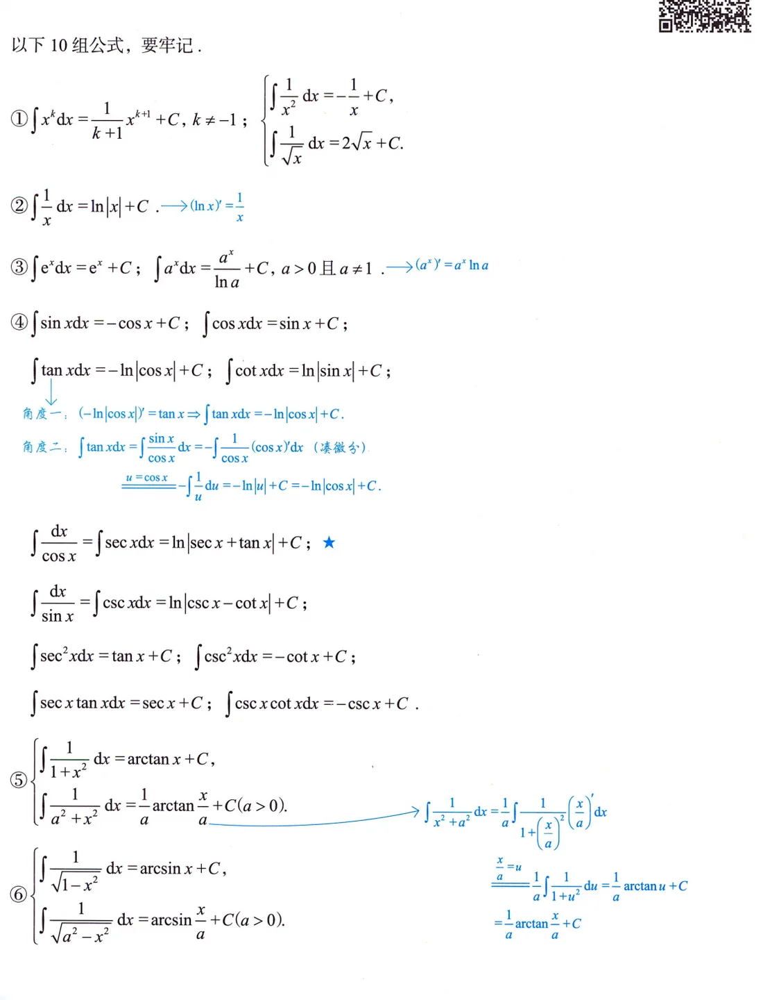
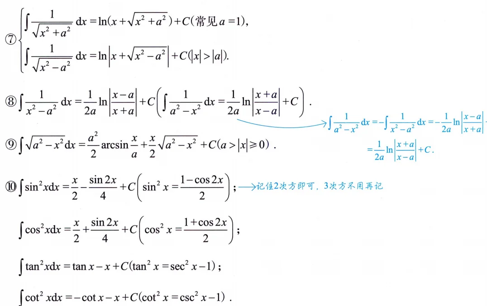
后四组里最值得背的是：\(\int \dfrac{\mathrm{d}x}{a^2+x^2}=\dfrac{1}{a}\arctan\dfrac{x}{a}+C\)、\(\int \dfrac{\mathrm{d}x}{\sqrt{a^2-x^2}}=\arcsin\dfrac{x}{a}+C\)（\(a>0\)），第⑦组 \(\int\dfrac{\mathrm{d}x}{\sqrt{x^2\pm a^2}}=\ln\left|x+\sqrt{x^2\pm a^2}\right|+C\)，以及降幂公式 \(\sin^2 x=\dfrac{1-\cos 2x}{2}\)、\(\cos^2 x=\dfrac{1+\cos 2x}{2}\)——书里说记 2 次方即可，3 次方不用背。第⑨条 \(\int \sqrt{a^2-x^2}\,\mathrm{d}x=\dfrac{a^2}{2}\arcsin\dfrac{x}{a}+\dfrac{x}{2}\sqrt{a^2-x^2}+C\) 会在例9.3 里现场推一遍，不用死记。
二、凑微分法
核心思想一句话：把被积函数的一部分放进 \(\mathrm{d}\) 后面，若能凑成 \(\int f(u)\,\mathrm{d}u\) 落入基本公式，就成功了。
\[\int f[g(x)]g'(x)\,\mathrm{d}x=\int f[g(x)]\,\mathrm{d}[g(x)]=\int f(u)\,\mathrm{d}u\quad(u=g(x)).\]
比如 \(\displaystyle\int\frac{\ln^5 x}{x}\mathrm{d}x=\int\ln^5 x\,\mathrm{d}(\ln x)=\frac{\ln^6 x}{6}+C\)。这是第一类换元法，本质是复合函数求导的逆过程。使用前先想"谁求导是剩下的那块"——书里给出的一般化判断：对被积函数的复杂部分求导，若恰好等于（或差常数倍于）剩下的因子，就能成。
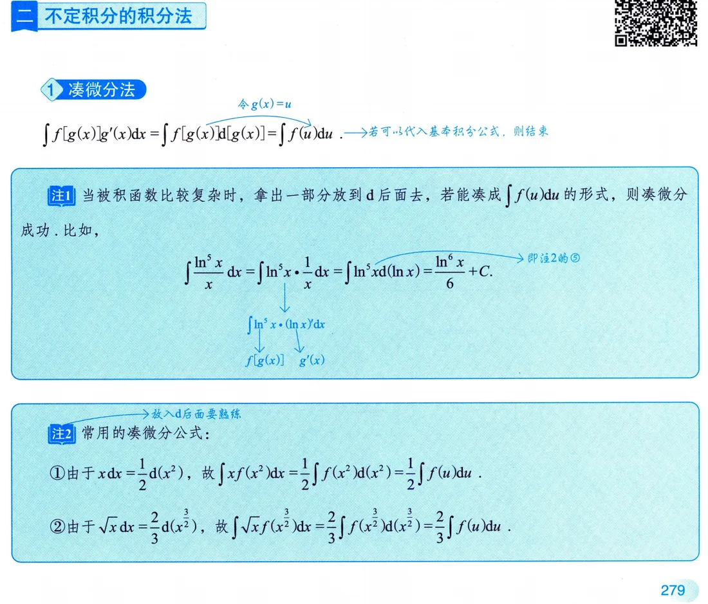
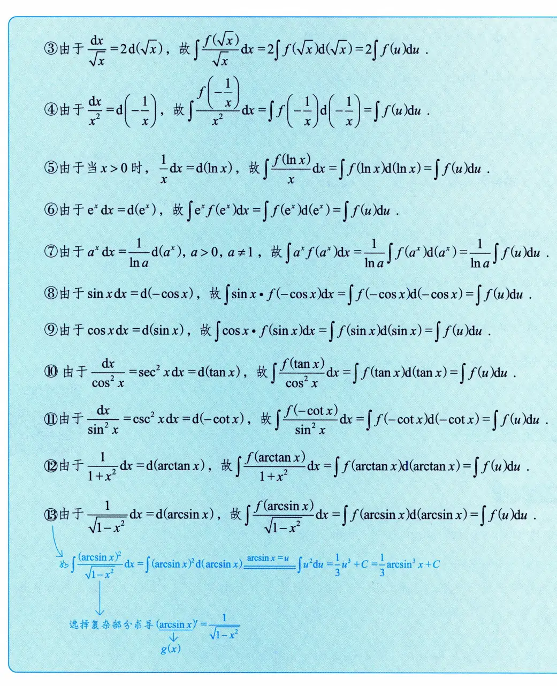
书里注 2 整理了 13 条常用凑微分公式，覆盖 \(x\,\mathrm{d}x\to\mathrm{d}(x^2)\)、\(\dfrac{\mathrm{d}x}{x}\to\mathrm{d}(\ln x)\)、\(\dfrac{\mathrm{d}x}{\sqrt{x}}\to 2\,\mathrm{d}(\sqrt{x})\)、\(\dfrac{\mathrm{d}x}{1+x^2}\to\mathrm{d}(\arctan x)\)、\(\dfrac{\mathrm{d}x}{\sqrt{1-x^2}}\to\mathrm{d}(\arcsin x)\)、\(\sin x\,\mathrm{d}x\to-\mathrm{d}(\cos x)\)、\(\sec^2 x\,\mathrm{d}x\to\mathrm{d}(\tan x)\) 这几大家族。这是基本功，我建议按"谁求导是剩下的那块"来记，不用死背。系数问题要单独警惕：\(\int\sqrt{x}\,f(x^{3/2})\mathrm{d}x=\dfrac{2}{3}\int f(x^{3/2})\,\mathrm{d}(x^{3/2})\)，那个 \(\frac23\) 是考场高频丢分点。
三、换元法
适用于被积函数里带根式、反三角函数这类"不好积"的家伙。设 \(x=g(u)\)，则 \(\int f(x)\,\mathrm{d}x=\int f[g(u)]g'(u)\,\mathrm{d}u\)；注意 \(g(u)\) 须单调可导，算完要用 \(u=g^{-1}(x)\) 回代。常用换元有五种，书里印 P282 一张图全总结：
- 三角代换：\(\sqrt{a^2-x^2}\) 令 \(x=a\sin t\)（\(t\in[-\frac{\pi}{2},\frac{\pi}{2}]\)，\(\cos t>0\)）；\(\sqrt{a^2+x^2}\) 令 \(x=a\tan t\)（\(t\in(-\frac{\pi}{2},\frac{\pi}{2})\)）；\(\sqrt{x^2-a^2}\) 令 \(x=a\sec t\)（\(t\in[0,\frac{\pi}{2})\cup(\frac{\pi}{2},\pi]\)）；回代时画辅助直角三角形最不容易错；
- 恒等变形后三角代换：\(\sqrt{ax^2+bx+c}\) 先配方成 \(\sqrt{\varphi^2(x)\pm k^2}\) 或 \(\sqrt{k^2-\varphi^2(x)}\)（例9.12 的 \(4x-x^2=4-(x-2)^2\)）；
- 根式代换（书里标了三星）：含 \(\sqrt[n]{ax+b}\) 就令 \(\sqrt[n]{ax+b}=t\)，既含 \(\sqrt[n]{\ }\) 又含 \(\sqrt[m]{\ }\) 时取最小公倍数 \(l\)，令 \(\sqrt[l]{ax+b}=t\)（例9.4 的 \(u=\sqrt{\mathrm{e}^x-1}\)）；根号内无平方项优先整体代换；
- 倒代换：分母的幂次比分子高两次及以上时令 \(x=\dfrac{1}{t}\)，但书里也提醒未必一定用；
- 复杂函数直接代换：含 \(\ln x\)、\(\arcsin x\)、\(\arctan x\)、\(a^x\)、\(\mathrm{e}^x\) 可直接令其为 \(t\)；不过它们与多项式 \(P_n(x)\) 或 \(\mathrm{e}^{ax}\) 相乘时优先考虑分部积分法。
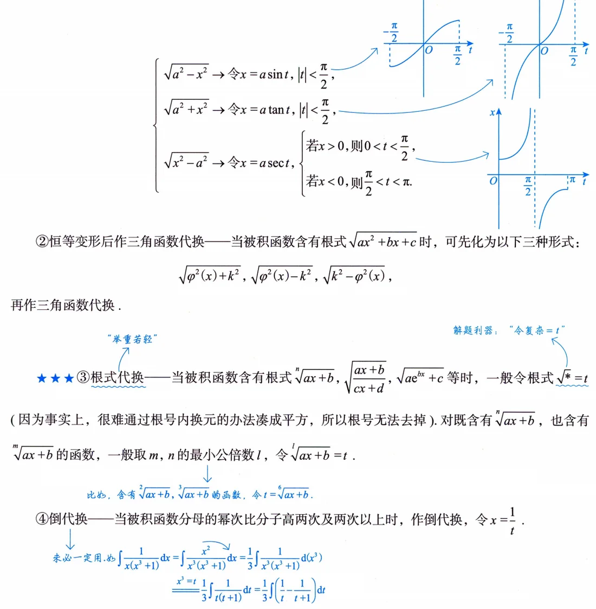
另有一条支线记一下：形如 \(\displaystyle\int\frac{\mathrm{d}x}{x\sqrt{\frac{ax+b}{cx+d}}}\) 的积分可用欧拉代换 \(\sqrt{\dfrac{ax+b}{cx+d}}=t\) 处理；三角有理式里 \(\sin x\)、\(\cos x\) 的齐次搭配还可以试"半角代换" \(\sin x=\dfrac{2\tan\frac{x}{2}}{1+\tan^2\frac{x}{2}}\)（即万能公式的思路，见"六、三角函数有理式"）。这两条是书里注里顺手给的储备，考频不高，见到认识即可。
例9.3 用 \(x=a\sin t\) 推了 \(\int \sqrt{a^2-x^2}\,\mathrm{d}x=a^2\int\cos^2 t\,\mathrm{d}t=\dfrac{a^2}{2}t+\dfrac{a^2}{4}\sin 2t+C\)，回代后就是公式⑨，记结论考场直接用（印P283）。
四、分部积分法
\[\int u\,\mathrm{d}v=uv-\int v\,\mathrm{d}u.\]
u,v 怎么选：口诀"反、对、幂、指、三"（arcsin/ln、幂、e^x、sin），排左边的做 \(u\)（求导），排右边的做 \(v\)（积分）。对应三类典型形式：\(P_n(x)\mathrm{e}^{kx}\)、\(P_n(x)\sin ax\)、\(P_n(x)\cos ax\) 取 \(u=P_n(x)\)；\(\mathrm{e}^{ax}\sin bx\) 这类 \(u\) 任取（分部两次后"重现自身"，移项解出）；\(P_n(x)\ln x\)、\(P_n(x)\arcsin x\)、\(P_n(x)\arctan x\) 取反三角或对数做 \(u\)。
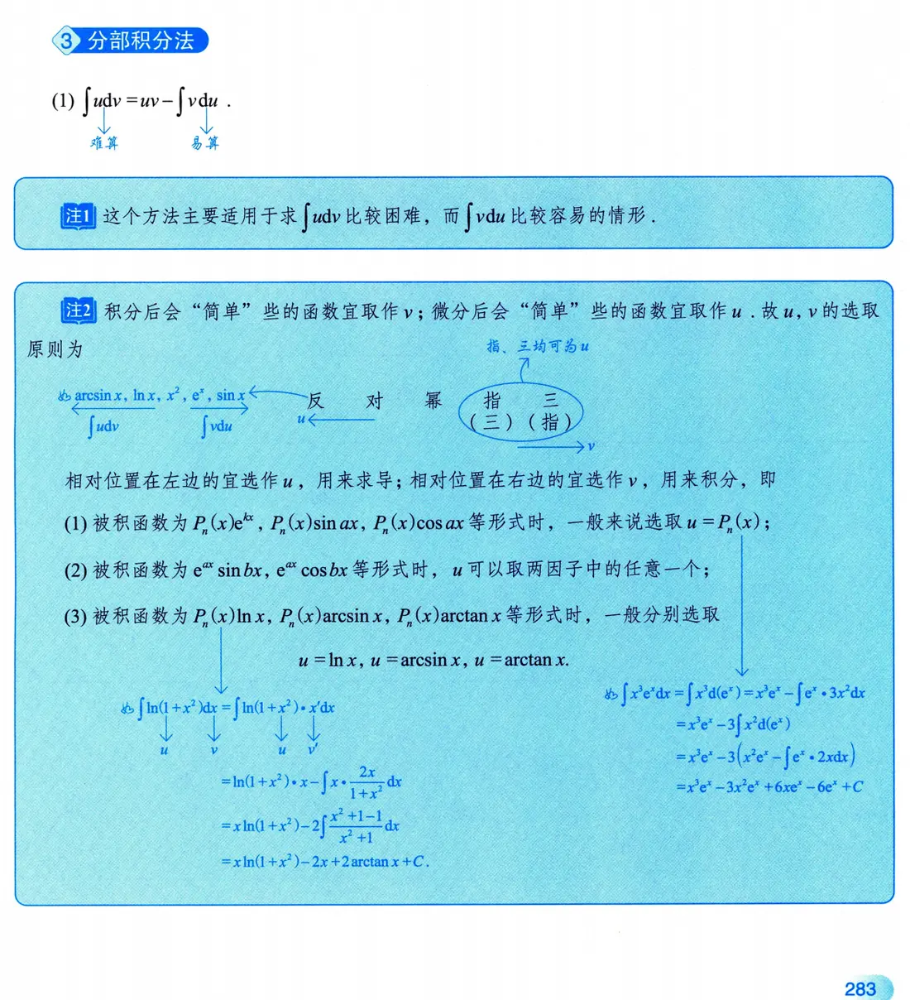
书里在注中给了两条可以直接背的结果（例9.5 用到）：
\[\int \mathrm{e}^{ax}\sin bx\,\mathrm{d}x=\frac{\mathrm{e}^{ax}(a\sin bx-b\cos bx)}{a^2+b^2}+C,\qquad \int \mathrm{e}^{ax}\cos bx\,\mathrm{d}x=\frac{\mathrm{e}^{ax}(a\cos bx+b\sin bx)}{a^2+b^2}+C.\]
还有一类"巧分部"值得专门记：被积函数展开后若出现正负两个相同的积分，可以相消——例9.7 的 \(\int \mathrm{e}^{2x}(\tan x+1)^2\mathrm{d}x\)，把 \((\tan x+1)^2\) 写成 \(\sec^2 x+2\tan x\)，前者正好是 \(\mathrm{d}(\tan x)\)，分部一次后两个 \(\int \mathrm{e}^{2x}\tan x\,\mathrm{d}x\) 一正一负直接抵消，答案干净利落。这类"构造自我抵消"的手感，只能靠动手做题养出来。
五、分部积分法的推广（表格法）
对付 \(P_n(x)\mathrm{e}^{kx}\)、\(P_n(x)\sin ax\)、\(P_n(x)\cos ax\) 型还有个机械化的推广公式。设 \(u\) 有直到 \(n+1\) 阶连续导数，反复分部可得：
\[\int uv^{(n+1)}\mathrm{d}x=uv^{(n)}-u'v^{(n-1)}+u''v^{(n-2)}-\cdots+(-1)^n u^{(n)}v+(-1)^{n+1}\int u^{(n+1)}v\,\mathrm{d}x.\]
操作上就是表格法：\(u\) 的各阶导数竖着排一列，\(v^{(n+1)}\) 的各阶原函数竖着排一列，"左上右下错位相乘"，符号 \(+、-\) 相间，最后补 \(\int u^{(n+1)}v\,\mathrm{d}x\)。取 \(u=P_n(x)\)（\(n\) 次求导后变常数），右列取 \(\mathrm{e}^{kx}\) 或 \(\sin ax\)、\(\cos ax\)（永远积得出来），末项自动为 \(\int 0\cdot v\,\mathrm{d}x=0\)，一步到位。
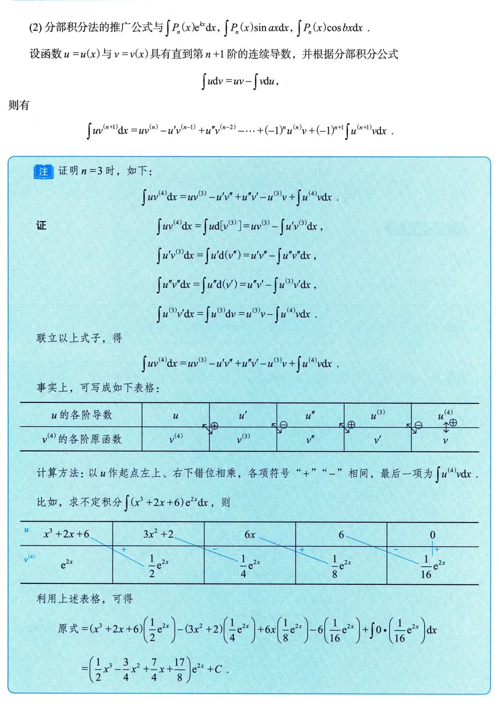
书里用 \(\int (x^3+2x+6)\mathrm{e}^{2x}\mathrm{d}x=\left(\dfrac{x^3}{2}-\dfrac{3x^2}{4}+\dfrac{7x}{4}+\dfrac{17}{8}\right)\mathrm{e}^{2x}+C\) 演示了整个表格：左列 \(x^3+2x+6\to \dfrac{x^3}{2}+x+3\to \dfrac{3x^2}{4}+\dfrac{3x}{4}+\dfrac32\to\dfrac32 x+\dfrac38\to\dfrac32\)，右列 \(\mathrm{e}^{2x}\) 逐个积分 \(\to\dfrac{\mathrm{e}^{2x}}{2}\to\dfrac{\mathrm{e}^{2x}}{4}\to\dfrac{\mathrm{e}^{2x}}{8}\to\dfrac{\mathrm{e}^{2x}}{16}\)。多项式那一列一定在 \(n+1\) 步后变常数，这就是表格法只适合"多项式 × 指数/三角"的原因。
六、有理函数的积分
形如 \(\displaystyle\int\frac{P_n(x)}{Q_m(x)}\mathrm{d}x\)：\(n<m\) 是真分式，直接拆；\(n\ge m\) 是假分式，先多项式除法化成"多项式 + 真分式"（如 \(\dfrac{x^2}{x+1}=x-1+\dfrac{1}{x+1}\)）。拆法的四条规则见截图：一次单因式 \((x-a)\) 给一项 \(\dfrac{A}{x-a}\)；\(k\) 重一次因式给 \(k\) 项 \(\dfrac{A_1}{x-a}+\cdots+\dfrac{A_k}{(x-a)^k}\)；二次单因式（\(q^2-4pr<0\)）给一项 \(\dfrac{Ax+B}{px^2+qx+r}\)；\(k\) 重二次因式给 \(k\) 项。
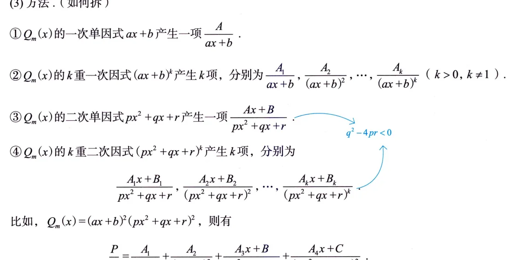
定系数有两种办法：比较同次幂系数（解方程组，死板）和赋值法（代根、代 \(x=0\)，快），例9.8 里两种都做了。书里原话：比较系数法"比较死板，且解系数满足的方程组有时较繁琐"，所以赋值优先，赋不尽的系数再回头比较一次项。分母是二次因式时常用"分子凑 \(k(\text{分母})'+\text{常数}\)"，拆成对数加反正切，如例9.10 的
\[\int\frac{2x+3}{x^2-x+1}\mathrm{d}x=\int\frac{(2x-1)+4}{x^2-x+1}\mathrm{d}x=\ln(x^2-x+1)+\frac{8}{\sqrt{3}}\arctan\frac{2x-1}{\sqrt{3}}+C.\]
（其中 \(x^2-x+1=(x-\frac12)^2+\frac34\)。）
七、三角函数有理式
形如 \(R(\sin x,\cos x)\)。兜底方案是万能公式 \(t=\tan\dfrac{x}{2}\)：\(\sin x=\dfrac{2t}{1+t^2}\)，\(\cos x=\dfrac{1-t^2}{1+t^2}\)，\(\mathrm{d}x=\dfrac{2\,\mathrm{d}t}{1+t^2}\)，一定化成有理函数，但计算量大，书里的态度是"保底不优先"。先看三个判定能不能凑微分省事：\(R(-\sin x,\cos x)=-R\) 时令 \(\cos x=t\)；\(R(\sin x,-\cos x)=-R\) 时令 \(\sin x=t\)；\(R(-\sin x,-\cos x)=R\) 时令 \(\tan x=t\)。
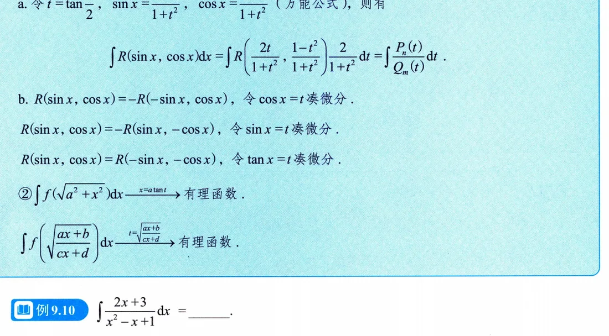
三个判定记法：把 \(\sin\) 换成 \(-\sin\) 后变号，说明 \(R\) 是"\(\sin\) 的奇函数"，就令 \(\cos x=t\)（余下用 \(\sin^2 x=1-\cos^2 x\)）；\(\cos\) 变号同理；同时变两个不变号，说明只含偶次幂，令 \(\tan x=t\)（\(\sin^2\)、\(\cos^2\) 都能用 \(\tan^2\) 表示）。万能公式只在三个判定全不满足、又没有别的结构可挖时才上。
八、定积分的牛顿–莱布尼茨公式及其推广
牛顿–莱布尼茨公式（N-L 公式）\(\displaystyle\int_a^b f(x)\mathrm{d}x=F(x)\Big|_a^b=F(b)-F(a)\)，其中 \(F\) 是 \(f\) 在 \([a,b]\) 上的任意一个原函数。书里强调条件：\(f\) 在 \([a,b]\) 上连续时 N-L 公式必然可用；若 \(f\) 只是可积，\(F\) 就未必存在，公式谈不上。
推广（书里标星）也常考：\(f\) 在 \([a,b]\) 上分段有原函数（\([a,c)\) 上 \(F_1\)，\((c,b]\) 上 \(F_2\)），则分两段相加 \(F_1(c-0)-F_1(a)+F_2(b)-F_2(c+0)\)；两个单侧极限都存在才收敛。用法：遇到分段函数、含绝对值的被积函数，先拆区间再用 N-L。
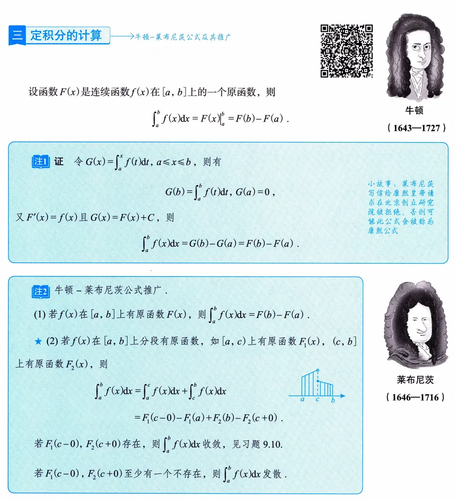
九、定积分的换元法与分部积分法（三换）
定积分换元要"三换"：被积函数换 \(f(x)\to f[\varphi(t)]\)、\(\mathrm{d}x\to\varphi'(t)\mathrm{d}t\)、上下限换 \(\int_a^b\to\int_\alpha^\beta\)（\(a=\varphi(\alpha)\)、\(b=\varphi(\beta)\)），缺一不可——换了上下限就不用回代，这是定积分换元比不定积分省事的地方。条件：\(\varphi\) 在 \([\alpha,\beta]\) 上单调且 \(\varphi'\) 连续。分部积分公式带上限：
\[\int_a^b u\,\mathrm{d}v=uv\Big|_a^b-\int_a^b v\,\mathrm{d}u.\]
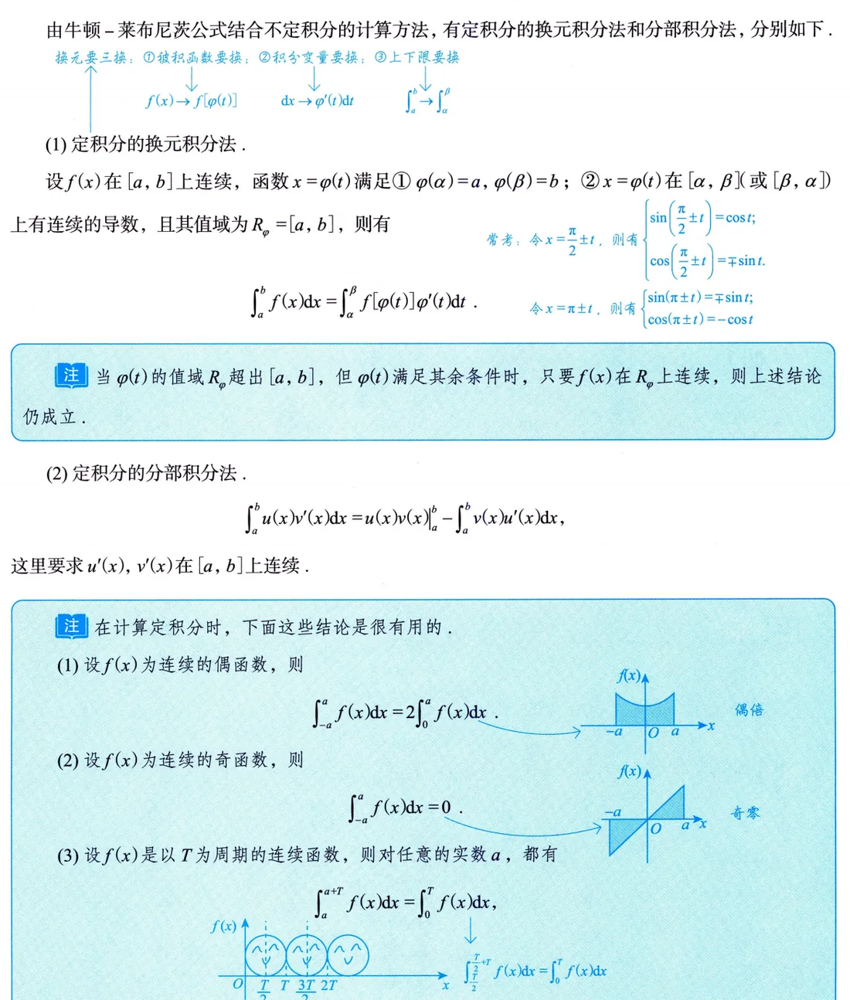
十、对称性与周期性（偶倍奇零、区间平移）
- 对称区间：\(f\) 连续偶函数 \(\int_{-a}^{a}f\,\mathrm{d}x=2\int_0^a f\,\mathrm{d}x\)（偶倍），奇函数则为 0（奇零）。例9.13 先用偶倍折半再三角代换，是标准连招；
- 周期：\(f\) 以 \(T\) 为周期连续，则 \(\int_a^{a+T}f\,\mathrm{d}x=\int_0^T f\,\mathrm{d}x\)，与区间起点无关。周期平移+点火公式能处理"从任意点开始的一个周期上的幂指三角积分"。
这两条结合"被积函数的奇偶性看整体不看局部"的直觉，是化简定积分的第一反应。注意使用前提是积分区间对称——区间不对称时先拆区间凑对称，或用区间再现制造对称。
十一、区间再现公式
\[\int_a^b f(x)\,\mathrm{d}x=\int_a^b f(a+b-x)\,\mathrm{d}x.\]
证明一行：令 \(x=a+b-t\)，则 \(\mathrm{d}x=-\mathrm{d}t\)，上限 \(x=b\) 对应 \(t=a\)，负号翻转上下限，即证。使用场景：若 \(f(x)\) 复杂而 \(f(x)+f(a+b-x)\) 简单，就把两式相加取平均。经典示范：\(\displaystyle\int_0^{\frac{\pi}{4}}\ln(1+\tan x)\mathrm{d}x=\frac{\pi}{8}\ln 2\)（\(x\to\frac{\pi}{4}-x\) 后两式相加，被积函数和为 \(\ln 2\)）。
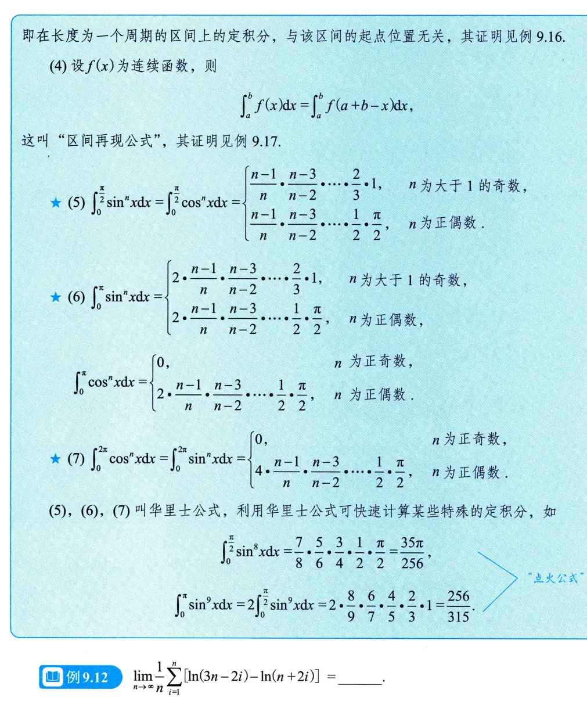
区间再现最重要的特例是"去 \(x\)"：\(\displaystyle\int_0^{\pi}xf(\sin x)\mathrm{d}x=\frac{\pi}{2}\int_0^{\pi}f(\sin x)\mathrm{d}x\)（例9.18，令 \(x=\pi-t\)）。凡是积分区间关于中心对称、被积函数带个孤零零的 \(x\) 因子的，第一反应就应该是它。
十二、华里士（点火）公式
背 0 到 \(\frac{\pi}{2}\) 这条就够，其余靠对称推：
\[\int_0^{\frac{\pi}{2}}\sin^n x\,\mathrm{d}x=\int_0^{\frac{\pi}{2}}\cos^n x\,\mathrm{d}x= \begin{cases} \dfrac{n-1}{n}\cdot\dfrac{n-3}{n-2}\cdots\dfrac{2}{3}\cdot 1, & n\ \text{为大于}1\text{的奇数},\\[3mm] \dfrac{n-1}{n}\cdot\dfrac{n-3}{n-2}\cdots\dfrac{1}{2}\cdot\dfrac{\pi}{2}, & n\ \text{为正偶数}. \end{cases}\]
\(\int_0^{\pi}\sin^n x\,\mathrm{d}x\) 是它的 2 倍（\(\sin\) 关于 \(\frac{\pi}{2}\) 对称）；\(\int_0^{\pi}\cos^n x\,\mathrm{d}x\) 当 \(n\) 为奇数时是 0（正负抵消）、偶数时同 2 倍；\(\int_0^{2\pi}\) 上奇数为 0、偶数为 4 倍。书里的示范：\(\displaystyle\int_0^{\frac{\pi}{2}}\sin^8x\,\mathrm{d}x=\frac{7}{8}\cdot\frac{5}{6}\cdot\frac{3}{4}\cdot\frac{1}{2}\cdot\frac{\pi}{2}=\frac{35\pi}{256}\)，\(\displaystyle\int_0^{\pi}\sin^9x\,\mathrm{d}x=2\cdot\frac{8}{9}\cdot\frac{6}{7}\cdot\frac{4}{5}\cdot\frac{2}{3}\cdot 1=\frac{256}{315}\)。
记忆口诀（民间版）："奇数项剩 1，偶数项剩 \(\frac{\pi}{2}\)"——点火就是从 \(n\) 开始分子分母一路递减 2"点"下去。适用条件只有一条：积分区间必须是 \([0,\frac{\pi}{2}]\)（或可化成它的 2 倍/4 倍区间）；区间不是标准区间的，先用对称性或周期平移化过去再用。
十三、变限积分的求导公式
设 \(f\) 在 \([a,b]\) 上连续，\(\varphi_1,\varphi_2\) 可导且值域落在 \([a,b]\) 内，则
\[F'(x)=\frac{\mathrm{d}}{\mathrm{d}x}\left[\int_{\varphi_1(x)}^{\varphi_2(x)}f(t)\,\mathrm{d}t\right]=f[\varphi_2(x)]\varphi_2'(x)-f[\varphi_1(x)]\varphi_1'(x).\]
特例：\(\dfrac{\mathrm{d}}{\mathrm{d}x}\int_a^x f(t)\,\mathrm{d}t=f(x)\)（这是"连续函数必有原函数"的构造性证明）；\(\dfrac{\mathrm{d}}{\mathrm{d}x}\int_x^a f(t)\,\mathrm{d}t=-f(x)\)。
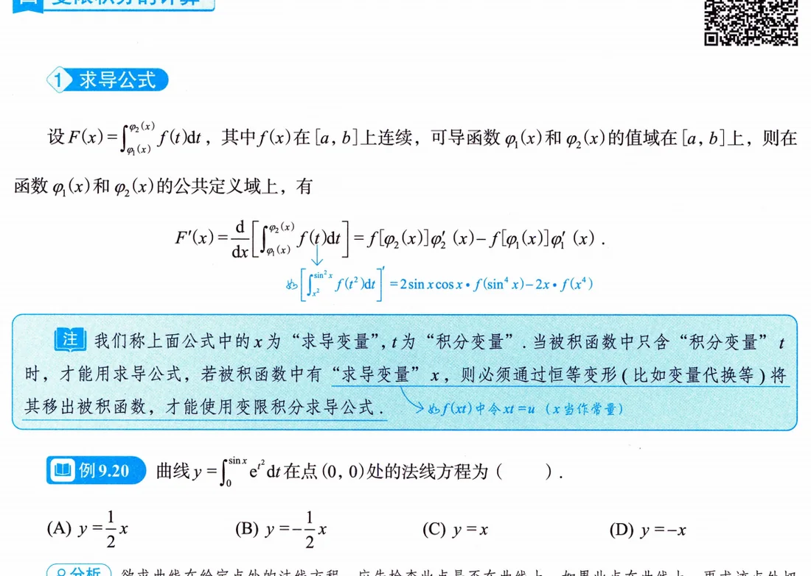
书里注得很清楚：\(x\) 是"求导变量"、\(t\) 是"积分变量"，被积函数里只含 \(t\) 才能直接套公式；混进了 \(x\) 必须先恒等变形（换元）移出去，如 \(\int_0^x f(xt)\,\mathrm{d}t\) 中令 \(xt=u\)（\(x\) 视为常数），把 \(x\) 移到积分限上再求导。复合链也别慌：\(\dfrac{\mathrm{d}}{\mathrm{d}x}\int_0^{g(x)}f(t)\,\mathrm{d}t=f[g(x)]g'(x)\)，"上限代入、再乘上限的导数"两步走（例9.21 连用两次）。
十四、变限积分的重要结论（奇偶性/周期性/有界性）
三条结论（考研常客，注意"可积"就够了，"连续"才能谈原函数）：
- 奇偶性：奇函数的变限积分 \(\int_0^x f(t)\mathrm{d}t\) 是偶函数，且连续奇函数的全体原函数都是偶函数；偶函数的 \(\int_0^x f(t)\mathrm{d}t\) 是奇函数，连续偶函数的原函数中仅有这一个奇函数。例9.24 就是用第一条秒杀 \(F(x)=\int_0^x t\sin^4 t\,\mathrm{d}t\) 的奇偶性；
- 周期性：周期函数的 \(\int_0^x f(t)\mathrm{d}t\) 以 \(T\) 为周期 \(\Leftrightarrow \int_0^T f(x)\mathrm{d}x=0\)，而 \(\int_a^x f(t)\mathrm{d}t=\int_a^0+\int_0^x\) 恒为周期函数（常数加周期函数仍是周期函数）；
- 有界性（例9.25 的模型）：\(f\ge 0\) 时 \(F(x)=\int_0^x f\) 单调增；若 \(\int_0^{+\infty}f\,\mathrm{d}t\) 收敛，则 \(F\) 在 \((0,+\infty)\) 上有界。
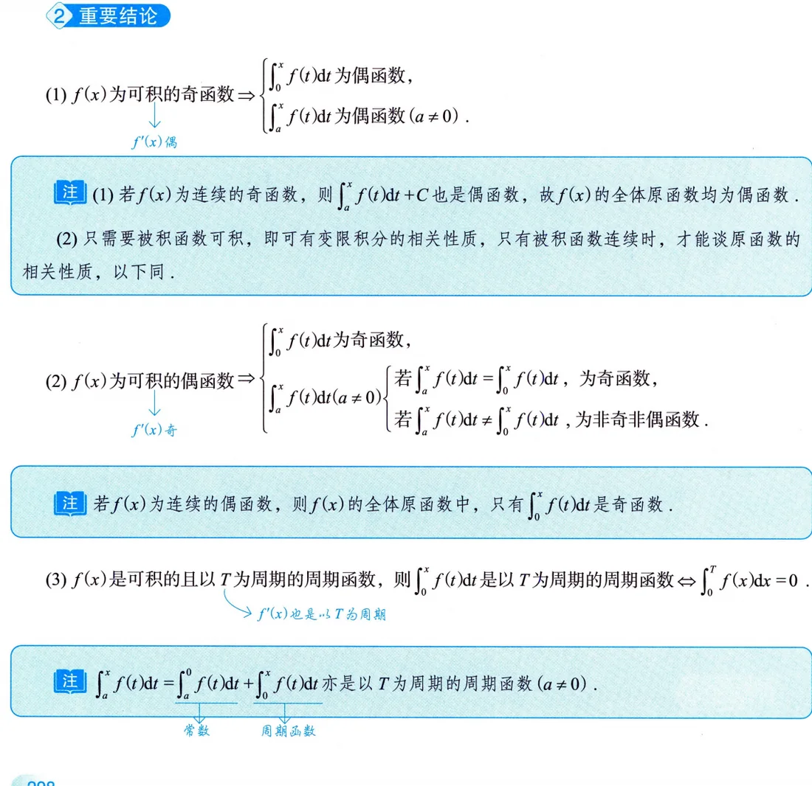
十五、反常积分的计算（先找奇点）
先做的事只有一件：找奇点（瑕点/无穷间断点），端点要查，区间内部的更要查（书里特意圈了"内部"，例9.26 的 \(x=1\) 就藏在区间 \([\frac12,\frac32]\) 中间）。计算流程：拆区间去绝对值、瑕点处取极限、每段分别算再相加；任何一段发散则整体发散。
两个好用的事实：其一，\(\int_{-\infty}^{+\infty}\) 型若被积函数为奇函数，不要直接说等于 0——先按定义拆成 \(\int_{-\infty}^0+\int_0^{+\infty}\) 讨论敛散（存在反例，这是概念题陷阱，详见 L8）；其二，在收敛的条件下，换元可以让反常积分与定积分互相转化，如例9.27 用 \(x-1=\sec\theta\) 一类的代换把无穷限积分化成了定积分再算。最基本的两个结果要形成直觉：\(\displaystyle\int_0^1\frac{\mathrm{d}x}{\sqrt{1-x^2}}=\frac{\pi}{2}\)（收敛），\(\displaystyle\int_1^{+\infty}\frac{\mathrm{d}x}{x}\) 发散而 \(\displaystyle\int_1^{+\infty}\frac{\mathrm{d}x}{x^2}=1\) 收敛（\(p\) 积分的分界）。
十六、Γ 函数
Γ 函数是反常积分的外挂：\(\Gamma(\alpha)=\displaystyle\int_0^{+\infty}x^{\alpha-1}\mathrm{e}^{-x}\mathrm{d}x\)（\(\alpha>0\) 时收敛；\(x\to 0^+\) 时与 \(\int x^{\alpha-1}\) 比较、\(x\to+\infty\) 时被 \(\mathrm{e}^{-x}\) 压住）。核心性质四条：
\[\Gamma(\alpha+1)=\alpha\Gamma(\alpha),\qquad \Gamma(1)=1,\qquad \Gamma\!\left(\tfrac12\right)=\sqrt{\pi},\qquad \Gamma(n+1)=n!.\]
于是 \(\Gamma(\tfrac52)=\dfrac32\cdot\dfrac12\cdot\sqrt{\pi}=\dfrac{3\sqrt{\pi}}{4}\)，\(\displaystyle\int_0^{+\infty}x^n\mathrm{e}^{-x}\mathrm{d}x=n!\)（例9.28 的递推就是 \(\Gamma\) 递推的离散版）。含 \(\mathrm{e}^{-x}\)、\(\mathrm{e}^{-x^2}\) 的幂次积分，先凑成 \(\Gamma\) 形状再查表（例9.29）。
典型例题精讲
例9.1 凑微分综合（印P280）
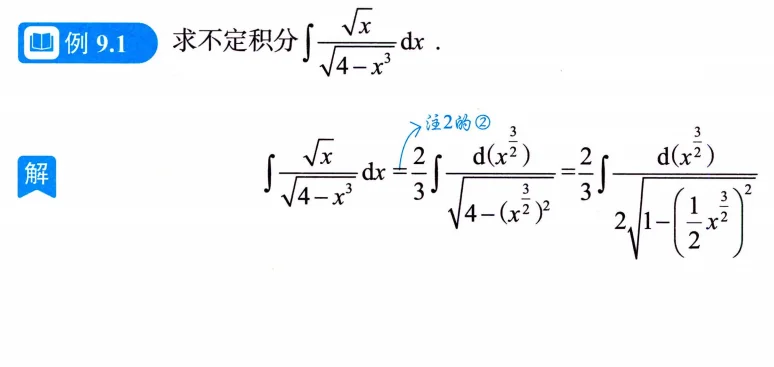
思路 根号内无平方项（\(\sqrt{x}\) 与 \(\sqrt{4-x^3}\)），不套三角代换，直接凑 \(\sqrt{x}\,\mathrm{d}x=\mathrm{d}\!\left(\dfrac{2}{3}x^{3/2}\right)\)，让 \(\sqrt{4-x^3}=\sqrt{4\left(1-\left(\frac{x^{3/2}}{2}\right)^2\right)}\) 落进 arcsin 公式。
要点 原式 \(=\displaystyle\int\frac{\sqrt{x}}{\sqrt{4-x^3}}\mathrm{d}x=\frac{2}{3}\int\frac{\mathrm{d}\!\left(\frac{1}{2}x^{3/2}\right)}{\sqrt{1-\left(\frac{1}{2}x^{3/2}\right)^{2}}}=\frac{2}{3}\arcsin\left(\frac{1}{2}x^{3/2}\right)+C\)。
注 全程只用了凑微分公式③（\(\sqrt{x}\,\mathrm{d}x\) 家族）和基本公式⑧——这类题是"先看根号内有没有平方项"分诊的典型：没有就整体凑，有才三角代换。
例9.2 复杂因子的求导验证（印P281）
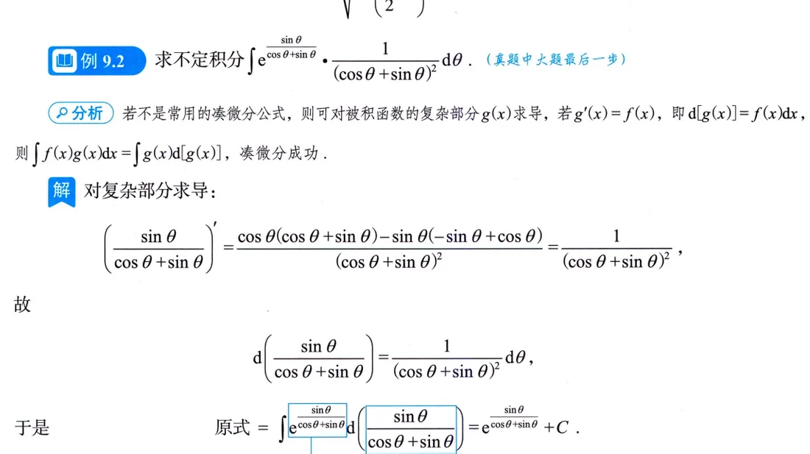
思路 这题不匹配任何一条常用凑微分公式。书里给的一般套路：对被积函数的复杂部分 \(g(\theta)=\dfrac{\sin\theta}{\cos\theta+\sin\theta}\) 求导，若恰好等于剩下的因子，就能凑成 \(\int \mathrm{e}^g\,\mathrm{d}g\)。
要点 求导验证：
\[\left(\frac{\sin\theta}{\cos\theta+\sin\theta}\right)'=\frac{\cos\theta(\cos\theta+\sin\theta)-\sin\theta(-\sin\theta+\cos\theta)}{(\cos\theta+\sin\theta)^2}=\frac{1}{(\cos\theta+\sin\theta)^2},\]
于是 原式 \(=\displaystyle\int \mathrm{e}^{\frac{\sin\theta}{\cos\theta+\sin\theta}}\,\mathrm{d}\!\left(\frac{\sin\theta}{\cos\theta+\sin\theta}\right)=\mathrm{e}^{\frac{\sin\theta}{\cos\theta+\sin\theta}}+C\)。
注 书里标注"真题中大题最后一步"，即 \(\int f(x)g(x)\mathrm{d}x\) 中若 \(g'(x)=f(x)\)，就写 \(\int g(x)\,\mathrm{d}[g(x)]\)。
例9.3 三角代换推导基本公式⑨（印P283）
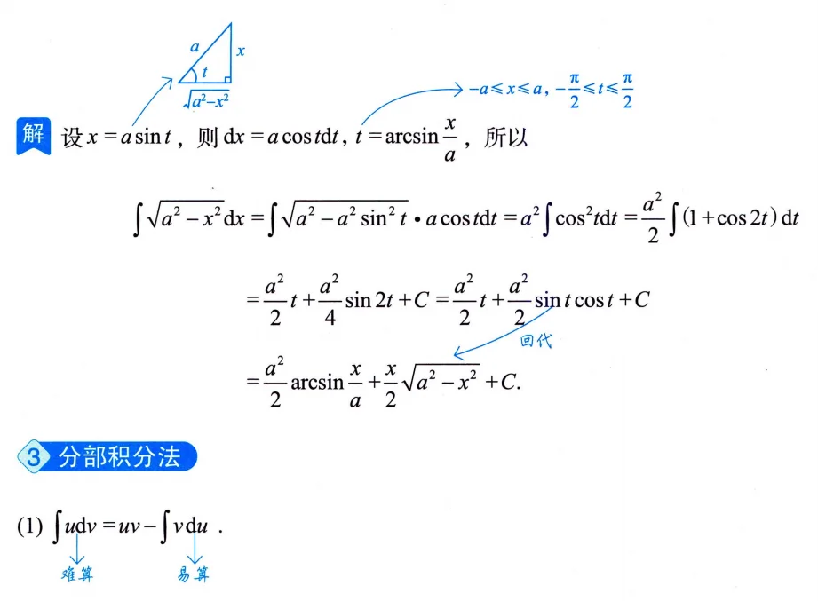
思路 求 \(\int\sqrt{a^2-x^2}\,\mathrm{d}x\)。根号内是"平方项减"结构，令 \(x=a\sin t\)、\(t\in[-\frac{\pi}{2},\frac{\pi}{2}]\)，则 \(\sqrt{a^2-x^2}=a\cos t\)（\(t\) 取主值区间保证 \(\cos t\ge 0\)，开根号不带绝对值麻烦）。
要点 \(\mathrm{d}x=a\cos t\,\mathrm{d}t\)，于是
\[\int\sqrt{a^2-x^2}\,\mathrm{d}x=a^{2}\int\cos^{2}t\,\mathrm{d}t=\frac{a^{2}}{2}t+\frac{a^{2}}{4}\sin 2t+C=\frac{a^{2}}{2}\arcsin\frac{x}{a}+\frac{x}{2}\sqrt{a^{2}-x^{2}}+C,\]
回代时画辅助直角三角形（斜边 \(a\)、对边 \(x\)、邻边 \(\sqrt{a^2-x^2}\)），\(\sin t=\dfrac{x}{a}\)、\(\sin 2t=2\sin t\cos t=\dfrac{2x\sqrt{a^2-x^2}}{a^2}\) 直接读出。
注 这就是基本公式⑨的来历，推过一遍就永远记得住；降幂公式 \(\cos^2t=\frac{1+\cos 2t}{2}\) 在这里第一次实战。
例9.4 根式代换+分部（印P285）
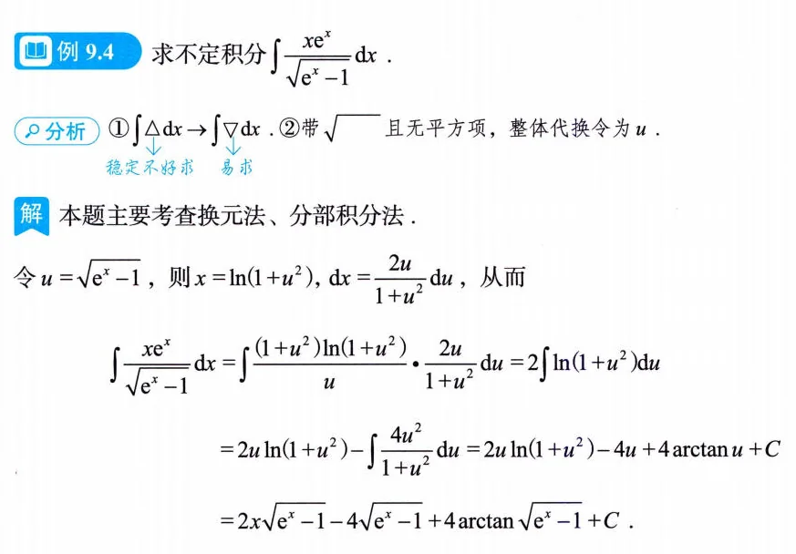
思路 求 \(\displaystyle\int\frac{x\mathrm{e}^x}{\sqrt{\mathrm{e}^x-1}}\mathrm{d}x\)。带根号且根号内无平方项，整体代换：令 \(u=\sqrt{\mathrm{e}^x-1}\)，则 \(x=\ln(1+u^2)\)，\(\mathrm{d}x=\dfrac{2u}{1+u^2}\mathrm{d}u\)，根号和 \(\mathrm{e}^x\) 一起消失。
要点
\[\int\frac{x\mathrm{e}^x}{\sqrt{\mathrm{e}^x-1}}\mathrm{d}x=2\int\ln(1+u^2)\mathrm{d}u=2u\ln(1+u^2)-\int\frac{4u^2}{1+u^2}\mathrm{d}u=2u\ln(1+u^2)-4u+4\arctan u+C,\]
回代得 \(2x\sqrt{\mathrm{e}^x-1}-4\sqrt{\mathrm{e}^x-1}+4\arctan\sqrt{\mathrm{e}^x-1}+C\)。其中 \(\dfrac{u^2}{1+u^2}=1-\dfrac{1}{1+u^2}\) 的假分式化简不能忘。
注 换元 + 分部的组合拳；书里分析还有一句口诀"\(\triangle\mathrm{d}x\to\nabla\mathrm{d}x\)"：难求的部分先放着，先把容易处理的因子送进 \(\mathrm{d}\) 里。
例9.5 三角代换+分部"重现自身"（印P285）
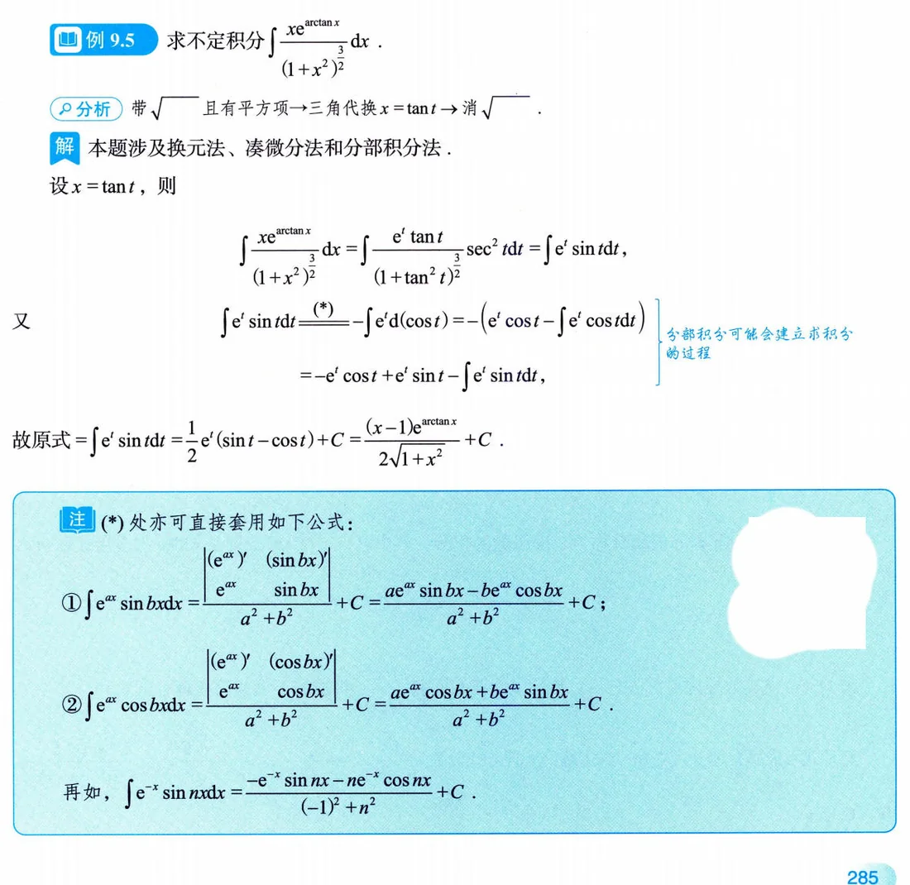
思路 求 \(\displaystyle\int\frac{x\,\mathrm{e}^{\arctan x}}{(1+x^2)^{3/2}}\mathrm{d}x\)。分母是 \((1+x^2)^{3/2}\)，根号内有平方项，三角代换 \(x=\tan t\)，\(\sqrt{1+x^2}=\sec t\)。
要点 换元后化为 \(\int \mathrm{e}^t\sin t\,\mathrm{d}t\)。分部一次后右边重现自身：
\[\int \mathrm{e}^t\sin t\,\mathrm{d}t=-\mathrm{e}^t\cos t+\mathrm{e}^t\sin t-\int \mathrm{e}^t\sin t\,\mathrm{d}t,\]
移项解出 \(=\dfrac{1}{2}\mathrm{e}^t(\sin t-\cos t)+C\)。回代 \(t=\arctan x\)，\(\sin t=\dfrac{x}{\sqrt{1+x^2}}\)，\(\cos t=\dfrac{1}{\sqrt{1+x^2}}\)，故原式 \(=\dfrac{(x-1)\,\mathrm{e}^{\arctan x}}{2\sqrt{1+x^2}}+C\)。
注 书里说"分部积分可能会建立求积分的过程"——出现自身别慌，移项。截图下方给了可直接套的公式：\(\displaystyle\int\mathrm{e}^{ax}\sin bx\,\mathrm{d}x=\frac{\mathrm{e}^{ax}(a\sin bx-b\cos bx)}{a^2+b^2}+C\)，\(\displaystyle\int\mathrm{e}^{ax}\cos bx\,\mathrm{d}x=\frac{\mathrm{e}^{ax}(a\cos bx+b\sin bx)}{a^2+b^2}+C\)。
例9.6 复合函数条件先求 f 再积分（印P286）
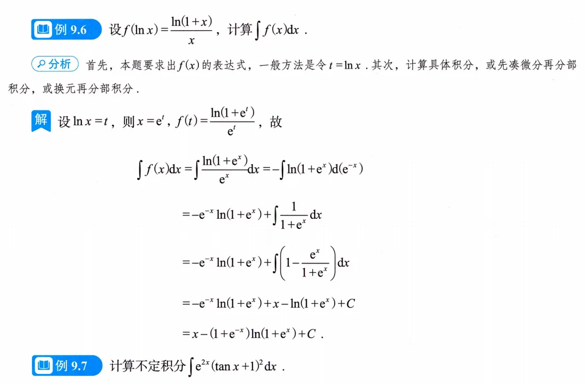
思路 设 \(f(\ln x)=\dfrac{\ln(1+x)}{x}\)，求 \(\int f(x)\,\mathrm{d}x\)。第一步必须先把 \(f\) 的表达式挖出来：令 \(t=\ln x\)，则 \(x=\mathrm{e}^t\)，\(f(t)=\dfrac{\ln(1+\mathrm{e}^t)}{\mathrm{e}^t}\)，即 \(f(x)=\mathrm{e}^{-x}\ln(1+\mathrm{e}^x)\)。
要点 \(\displaystyle\int f(x)\,\mathrm{d}x=\int \mathrm{e}^{-x}\ln(1+\mathrm{e}^x)\mathrm{d}x\)，被积函数是"指数 × 对数"，按"反、对、幂、指、三"，取 \(u=\ln(1+\mathrm{e}^x)\)、\(v=-\mathrm{e}^{-x}\) 分部：
\[-\mathrm{e}^{-x}\ln(1+\mathrm{e}^x)+\int\frac{\mathrm{d}x}{1+\mathrm{e}^x}=-\mathrm{e}^{-x}\ln(1+\mathrm{e}^x)+x-\ln(1+\mathrm{e}^x)+C,\]
其中 \(\dfrac{1}{1+\mathrm{e}^x}=1-\dfrac{\mathrm{e}^x}{1+\mathrm{e}^x}\) 的改写是关键一步。
注 书里点评了两条路线"先凑微分再分部，或换元再分部积分"，殊途同归；这类"给 \(f(g(x))\) 求 \(\int f\)（或 \(\int f'\)）"的题，第一动作永远是换元显化 \(f\)。
例9.7 展开后分部自我抵消（印P286）
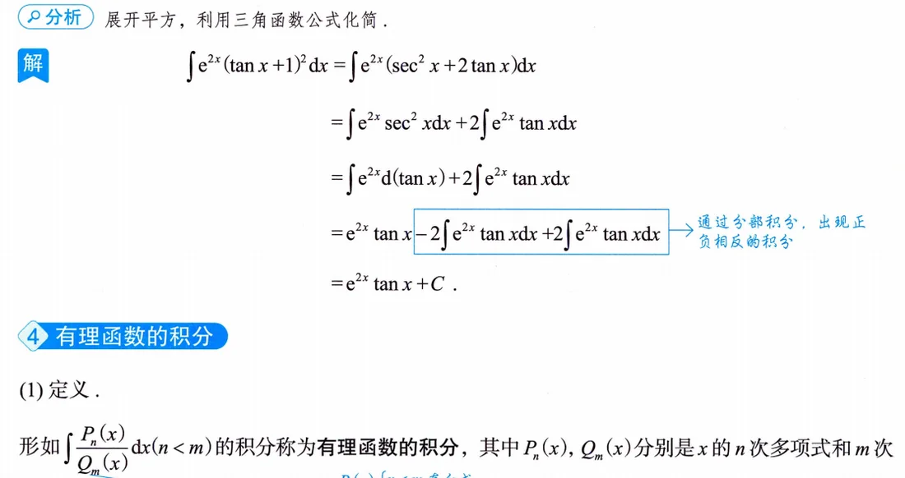
思路 求 \(\int \mathrm{e}^{2x}(\tan x+1)^2\mathrm{d}x\)。把平方展开：\((\tan x+1)^2=\tan^2 x+2\tan x+1=\sec^2 x+2\tan x\)。看到 \(\sec^2 x\) 立即意识到它是 \(\mathrm{d}(\tan x)\)。
要点 原式 \(=\displaystyle\int\mathrm{e}^{2x}\sec^2x\,\mathrm{d}x+2\int\mathrm{e}^{2x}\tan x\,\mathrm{d}x\)，第一项分部（\(v=\tan x\)）：
\[\int\mathrm{e}^{2x}\sec^2 x\,\mathrm{d}x=\mathrm{e}^{2x}\tan x-2\int\mathrm{e}^{2x}\tan x\,\mathrm{d}x,\]
与第二项 \(2\int\mathrm{e}^{2x}\tan x\,\mathrm{d}x\) 恰好相消，答案 \(\mathrm{e}^{2x}\tan x+C\)。
注 这是 1991 数三真题。考研真题的"天机"：被积函数与原函数之间可以差一个导数运算——多项式求导、\(\tan x\) 求导变 \(\sec^2 x\)、再乘常数差 \(\mathrm{e}^{kx}\) 倍，先展开观察、再凑自我抵消。
例9.8 有理函数、两种定系数法对照（印P288）
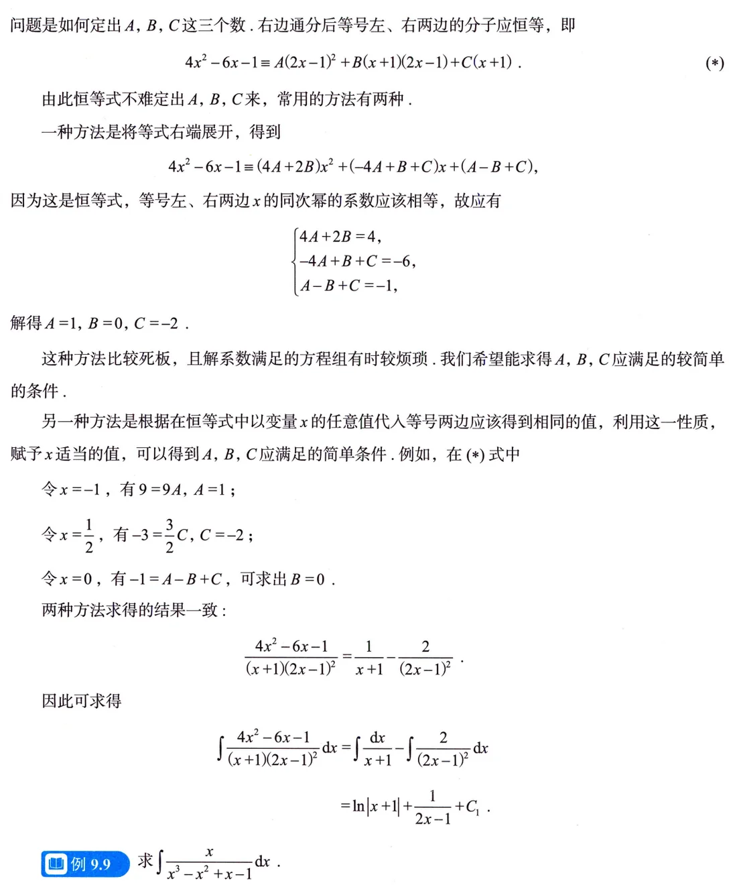
思路 求 \(\displaystyle\int\frac{4x^2-6x-1}{(x+1)(2x-1)^2}\mathrm{d}x\)。真分式，分母含单因式 \((x+1)\) 和二重因式 \((2x-1)^2\)，按四条拆法设 \(\dfrac{4x^2-6x-1}{(x+1)(2x-1)^2}=\dfrac{A}{x+1}+\dfrac{B}{2x-1}+\dfrac{C}{(2x-1)^2}\)，通分后分子恒等。
要点 \(4x^2-6x-1\equiv A(2x-1)^2+B(x+1)(2x-1)+C(x+1)\)。解法一（比较系数）：展开得 \((4A+2B)x^2+(-4A+B+C)x+(A-B+C)\)，解方程组 \(A=1,B=0,C=-2\)。解法二（赋值）：令 \(x=-1\)，\(9=9A\)；令 \(x=\dfrac12\)，\(-3=\dfrac32C\)；令 \(x=0\)，\(-1=A-B+C\)——更快。于是
\[\int\frac{4x^2-6x-1}{(x+1)(2x-1)^2}\mathrm{d}x=\int\frac{\mathrm{d}x}{x+1}-\int\frac{2\,\mathrm{d}x}{(2x-1)^2}=\ln|x+1|+\frac{1}{2x-1}+C_1.\]
注 书里原话：比较系数法"比较死板，且解系数满足的方程组有时较繁琐"，赋值代定系数是首选。
例9.9 一次因式+二次因式的拆分（印P288–289）
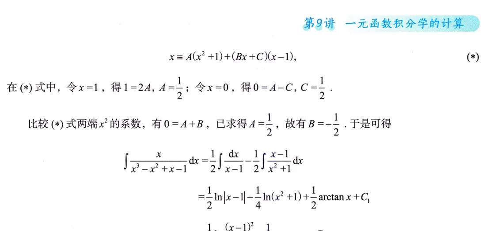
思路 求 \(\displaystyle\int\frac{x}{x^3-x^2+x-1}\mathrm{d}x\)。分母 \(=(x-1)(x^2+1)\)，一实一虚两个因式，设 \(\dfrac{x}{(x-1)(x^2+1)}=\dfrac{A}{x-1}+\dfrac{Bx+C}{x^2+1}\)。
要点 \(x=A(x^2+1)+(Bx+C)(x-1)\)。赋值：令 \(x=1\)，\(A=\dfrac12\)；令 \(x=0\)，\(C=\dfrac12\)；比较 \(x^2\) 系数 \(0=A+B\)，\(B=-\dfrac12\)（赋值与比较系数混用，怎么快怎么来）。于是
\[\int\frac{x}{(x-1)(x^2+1)}\mathrm{d}x=\frac12\ln|x-1|-\frac14\ln(x^2+1)+\frac12\arctan x+C,\]
其中 \(\dfrac{-x/2+1/2}{x^2+1}=-\dfrac{1}{4}\cdot\dfrac{2x}{x^2+1}+\dfrac{1}{2}\cdot\dfrac{1}{x^2+1}\) 的"分子凑分母导数"改写again。
注 二次因式那一项拆完必然是"\(\ln\) + \(\arctan\)"组合，这个预期要有。
例9.10 二次分母的凑微分（印P289）
思路 求 \(\displaystyle\int\frac{2x+3}{x^2-x+1}\mathrm{d}x\)（判别式 \(\Delta<0\)，分母不可再拆）。分子一次、分母导数 \(2x-1\) 也一次——凑"分子 = \(k\times\) 分母导数 + 剩余常数"。
要点 \(2x+3=(2x-1)+4\)：
\[\int\frac{2x+3}{x^2-x+1}\mathrm{d}x=\ln(x^2-x+1)+4\int\frac{\mathrm{d}x}{\left(x-\frac12\right)^2+\frac34}=\ln(x^2-x+1)+\frac{8}{\sqrt{3}}\arctan\frac{2x-1}{\sqrt{3}}+C.\]
注 分母配方后落进基本公式⑤；分子拆成的"导数部分给 \(\ln\)、常数部分给 \(\arctan\)"是二次分母的万能两步。本页书里注还顺带给了一条支线：形如 \(\displaystyle\int\frac{\mathrm{d}x}{x\sqrt{\frac{ax+b}{cx+d}}}\) 可用欧拉代换 \(\sqrt{\dfrac{ax+b}{cx+d}}=t\)，了解即可。
例9.11 分部去 x（印P291）
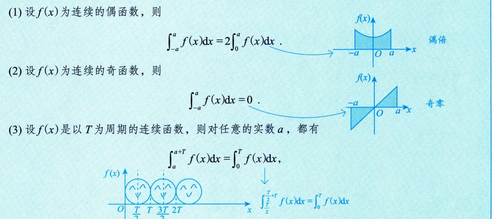
思路 计算 \(\displaystyle\int_0^{\frac{\pi}{4}}\frac{x}{1+\cos 2x}\mathrm{d}x\)。奇偶性看不出来、周期性也不明显，被积函数是"\(x\) 乘函数"，常规方法：分部积分法去 \(x\)。
要点 \(1+\cos 2x=2\cos^2 x\)，原式 \(=\dfrac12\displaystyle\int_0^{\frac{\pi}{4}}x\sec^2x\,\mathrm{d}x\)。分部（\(u=x\)，\(v=\tan x\)）：
\[\frac12\left[x\tan x+\ln\cos x\right]_0^{\frac{\pi}{4}}=\frac12\left(\frac{\pi}{4}+\ln\frac{\sqrt2}{2}\right)=\frac{\pi}{8}-\frac14\ln 2.\]
注 \(\int\tan x\,\mathrm{d}x=-\ln|\cos x|+C\) 这里直接用了基本公式表的星标结果；"\(x\) 乘三角/指数"的定积分，分部永远是第一候选，区间再现是备选。
例9.12 配方+三角代换（印P292）
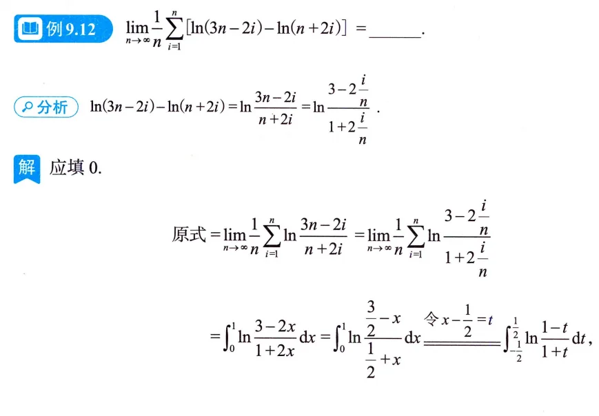
思路 计算 \(\displaystyle\int_0^3 x\sqrt{4x-x^2}\,\mathrm{d}x\)。偶倍奇零、周期都看不出来。根号内含平方项：\(4x-x^2=4-(x-2)^2\)，恒等变形后三角代换，令 \(x-2=2\sin t\)，取 \(t\in[-\frac{\pi}{2},\frac{\pi}{2}]\)。
要点 \(\sqrt{4x-x^2}=2\cos t\)、\(\mathrm{d}x=2\cos t\,\mathrm{d}t\)、\(x=2+2\sin t\)；\(x=0\) 对应 \(t=-\frac{\pi}{2}\)，\(x=3\) 对应 \(t=\frac{\pi}{6}\)。于是
\[\int_0^3 x\sqrt{4x-x^2}\,\mathrm{d}x=8\int_{-\frac{\pi}{2}}^{\frac{\pi}{6}}(1+\sin t)\cos^2 t\,\mathrm{d}t=8\left[\frac{t}{2}+\frac{\sin 2t}{4}-\frac{\cos^3 t}{3}\right]_{-\frac{\pi}{2}}^{\frac{\pi}{6}}=\frac{8\pi}{3}.\]
注 \(\int\sin t\cos^2t\,\mathrm{d}t=-\dfrac{\cos^3t}{3}\) 用的是凑微分 \(\sin t\,\mathrm{d}t=-\mathrm{d}(\cos t)\)；配方 \(4x-x^2=4-(x-2)^2\) 这一步必须条件反射。
例9.13 偶倍+三角代换+点火（印P293）
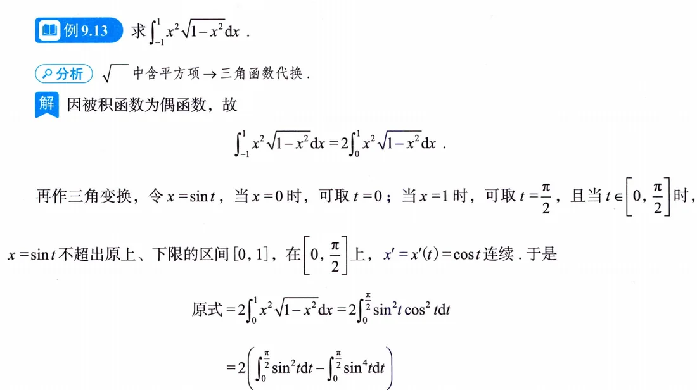
思路 计算 \(\displaystyle\int_{-1}^{1}x^2\sqrt{1-x^2}\,\mathrm{d}x\)。被积函数为偶函数，先利用偶倍；再对 \(\sqrt{1-x^2}\) 根号内有平方项，令 \(x=\sin t\)，取 \(t\in[0,\frac{\pi}{2}]\)。
要点
\[\int_{-1}^{1}x^2\sqrt{1-x^2}\,\mathrm{d}x=2\int_0^{\frac{\pi}{2}}\sin^2t\cos^2t\,\mathrm{d}t=2\left(\int_0^{\frac{\pi}{2}}\sin^2t\,\mathrm{d}t-\int_0^{\frac{\pi}{2}}\sin^4t\,\mathrm{d}t\right)=2\left(\frac12\cdot\frac{\pi}{2}-\frac34\cdot\frac12\cdot\frac{\pi}{2}\right)=\frac{\pi}{8}.\]
（\(\sin^2t\cos^2t=\sin^2t(1-\sin^2t)\) 拆开后逐项点火。）
注 书里注：换元后上下限取法不唯一（\(x=0\) 可取 \(t=0,\pm\pi,\pm2\pi,\cdots\)），但 \(\sqrt{1-x^2}=|\cos t|\) 的绝对值处理有简有繁，选 \(t\in[0,\frac{\pi}{2}]\) 别自找麻烦。
例9.14 对称化处理 sin/cos 齐次比（印P294）
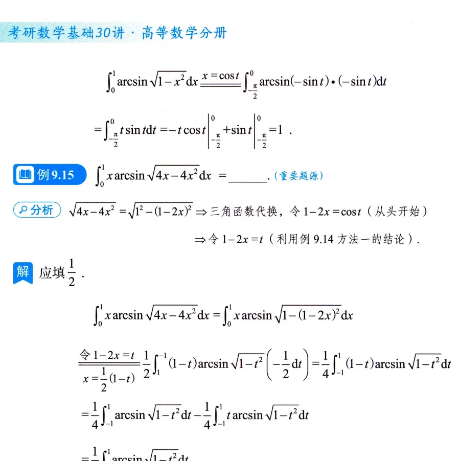
思路 计算 \(\displaystyle\int_0^{\frac{\pi}{2}}\frac{\sin^2 x}{(\sin x+\cos x)^2}\,\mathrm{d}x\)。区间 \([0,\frac{\pi}{2}]\) 关于 \(x=\frac{\pi}{4}\) 对称，而 \(\sin x\) 与 \(\cos x\) 在 \(x\to\frac{\pi}{2}-x\) 下互换——区间再现（诱导互化）。
要点 令 \(x=\frac{\pi}{2}-t\)，记原积分为 \(I\)，则 \(I=\displaystyle\int_0^{\frac{\pi}{2}}\frac{\cos^2 t}{(\sin t+\cos t)^2}\,\mathrm{d}t\)（分母不变）。两式相加：
\[2I=\int_0^{\frac{\pi}{2}}\frac{\sin^2 x+\cos^2 x}{(\sin x+\cos x)^2}\,\mathrm{d}x=\int_0^{\frac{\pi}{2}}\frac{\mathrm{d}x}{1+\sin 2x},\]
令 \(x-\frac{\pi}{4}=u\)，则 \(1+\sin 2x=2\cos^2u\)，\(2I=\dfrac12\int_{-\frac{\pi}{4}}^{\frac{\pi}{4}}\sec^2u\,\mathrm{d}u=\dfrac12\tan u\Big|_{-\frac{\pi}{4}}^{\frac{\pi}{4}}=1\)，故 \(I=\dfrac12\)。
注 "sin 与 cos 互换的区间再现"（\(x\to\frac{\pi}{2}-x\)）和"中心对称的区间再现"（\(x\to a+b-x\)）是同一件事的两种面貌，遇到 \(\frac{P(\sin,\cos)}{Q(\sin,\cos)}\) 在 \([0,\frac{\pi}{2}]\) 上先想它。
例9.15 高次幂的同型推广（印P294）
思路 计算 \(\displaystyle\int_0^{\frac{\pi}{2}}\frac{\sin^9 x}{\sin x+\cos x}\,\mathrm{d}x\)（与例9.14 同型，幂次抬高）。同样的代换 \(x=\frac{\pi}{2}-t\) 得 \(I=\displaystyle\int_0^{\frac{\pi}{2}}\frac{\cos^9 x}{\sin x+\cos x}\,\mathrm{d}x\)，相加平均。
要点
\[2I=\int_0^{\frac{\pi}{2}}\frac{\sin^9 x+\cos^9 x}{\sin x+\cos x}\,\mathrm{d}x=\int_0^{\frac{\pi}{2}}\left(\sin^8-\sin^7\cos+\cdots-\sin\cos^7+\cos^8\right)\mathrm{d}x,\]
（\(a^9+b^9=(a+b)(a^8-a^7b+a^6b^2-\cdots-ab^7+b^8)\)，九项错位相消。）逐项用 \(\displaystyle\int_0^{\frac{\pi}{2}}\sin^m\cos^n\,\mathrm{d}x\) 的点火/贝塔值（\(\int\sin^8=\frac{35\pi}{256}\)、\(\int\sin^7\cos=\frac18\)、\(\int\sin^6\cos^2=\frac{5\pi}{256}\)、\(\int\sin^5\cos^3=\frac{1}{24}\)、\(\int\sin^4\cos^4=\frac{3\pi}{256}\)，对称项同值），合并得
\[I=\frac{83\pi}{512}-\frac16.\]
注 书里备注"关于 \(x=\frac{\pi}{4}\) 对称"——同型题幂次再高，套路不变：先对称化去掉分母，再对分子逐项点火。这题数字不整，考场上验算靠数值感觉（\(I\approx0.343\)）。
例9.16 区间再现去 x·e^{cosx}（印P294）
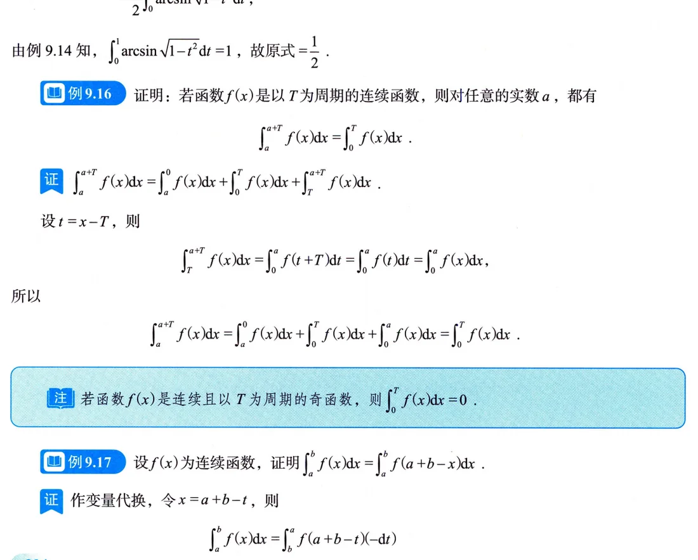
思路 计算 \(\displaystyle\int_0^\pi x\sin x\cdot \mathrm{e}^{\cos x}\mathrm{d}x\)。被积函数里的 \(x\) 没法分部处理干净（\(\mathrm{e}^{\cos x}\) 积不出来），但区间 \([0,\pi]\) 关于 \(\pi\) 对称，\(\sin x\)、\(\mathrm{e}^{\cos x}\) 在 \(x\to\pi-x\) 下不变——区间再现。
要点 记 \(I=\displaystyle\int_0^\pi x\sin x\,\mathrm{e}^{\cos x}\mathrm{d}x\)，令 \(x=\pi-t\)：
\[I=\int_0^\pi (\pi-t)\sin t\,\mathrm{e}^{\cos t}\mathrm{d}t=\pi\int_0^\pi \sin x\,\mathrm{e}^{\cos x}\mathrm{d}x-I,\]
故 \(I=\dfrac{\pi}{2}\displaystyle\int_0^\pi\sin x\,\mathrm{e}^{\cos x}\mathrm{d}x=\dfrac{\pi}{2}\left[-\mathrm{e}^{\cos x}\right]_0^\pi=\dfrac{\pi}{2}\left(\mathrm{e}-\mathrm{e}^{-1}\right)\)。
注 剩下的 \(\int_0^\pi\sin x\,\mathrm{e}^{\cos x}\mathrm{d}x\) 用凑微分 \(\sin x\,\mathrm{d}x=-\mathrm{d}(\cos x)\)——"\(\mathrm{e}\) 的三角复合"见到就找谁的导数。分部做不动时，区间再现是"\(x\) 因子"的第二条出路（第一条见例9.11）。
例9.17 区间再现+凑微分（印P294）
思路 计算 \(\displaystyle I=\int_0^\pi\frac{x\sin x}{1+\cos^2x}\,\mathrm{d}x\)。与例9.16 完全同型：\(x\) 因子 + 在 \(x\to\pi-x\) 下不变的 \(\frac{\sin x}{1+\cos^2x}\)。
要点 区间再现得 \(2I=\pi\displaystyle\int_0^\pi\frac{\sin x}{1+\cos^2x}\,\mathrm{d}x\)，凑微分 \(-\mathrm{d}(\cos x)\)：
\[2I=-\pi\arctan(\cos x)\Big|_0^\pi=-\pi\left(\arctan(-1)-\arctan 1\right)=\frac{\pi^2}{2},\qquad I=\frac{\pi^2}{4}.\]
注 本题是老牌经典（历届真题反复变式），与例9.16 连做形成肌肉记忆：见到 \([0,\pi]\) 上的 \(x f(\sin x)\)，先想 \(I=\frac{\pi}{2}\int_0^\pi f(\sin x)\mathrm{d}x\)。
例9.18 区间再现的一般结论（印P295）
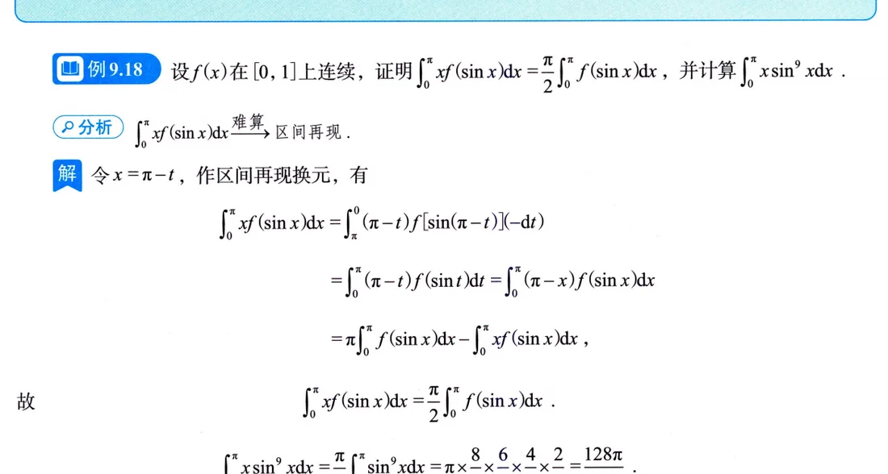
思路 \(x f(\sin x)\) 在 \([0,\pi]\) 上难算，区间再现：令 \(x=\pi-t\)。\(f(\sin x)\) 在代换下不变，于是可以一般化地处理抽象 \(f\)。
要点 记 \(I=\displaystyle\int_0^{\pi}xf(\sin x)\mathrm{d}x\)，换元得 \(I=\displaystyle\int_0^{\pi}(\pi-x)f(\sin x)\mathrm{d}x=\pi\int_0^{\pi}f(\sin x)\mathrm{d}x-I\)，故
\[I=\frac{\pi}{2}\int_0^{\pi}f(\sin x)\mathrm{d}x.\]
取 \(f(u)=u^9\)：\(\displaystyle\int_0^{\pi}x\sin^9x\,\mathrm{d}x=\frac{\pi}{2}\int_0^{\pi}\sin^9x\,\mathrm{d}x=\pi\times\frac{8}{9}\times\frac{6}{7}\times\frac{4}{5}\times\frac{2}{3}=\frac{128\pi}{315}\)。
注 其中 \(\int_0^{\pi}\sin^9x\,\mathrm{d}x=2\cdot\frac{8}{9}\cdot\frac{6}{7}\cdot\frac{4}{5}\cdot\frac{2}{3}\cdot 1\) 用的就是点火公式，两招连招是常见组合。结论本身建议背下来。
例9.19 变限积分的复合求导（印P296）
思路 设 \(f\) 连续、可导，求 \(\dfrac{\mathrm{d}}{\mathrm{d}x}\displaystyle\int_0^{f(x)}f(t)\,\mathrm{d}t\) 一类的问题。套公式"上限代入、乘上限导数"，外层再视需要复合。
要点 若 \(F(x)=\displaystyle\int_0^{x}f(t)\,\mathrm{d}t\)，则 \(F'(x)=f(x)\)；复合一次，\(\dfrac{\mathrm{d}}{\mathrm{d}x}F(f(x))=F'(f(x))\cdot f'(x)=f(f(x))\,f'(x)\)。书里用这个例子演练了链式法则与变限求导的衔接：上限是谁就把谁代进 \(f\)，再乘上限对自己的导数。
注 三种形态要分清：\(\int_0^{f(x)}f(t)\mathrm{d}t\) 求导 \(=f(f(x))f'(x)\)；\(\int_{\varphi_1(x)}^{\varphi_2(x)}g(t)\mathrm{d}t\) 求导 \(=g(\varphi_2)\varphi_2'-g(\varphi_1)\varphi_1'\)；被积函数含 \(x\) 的（如 \(f(xt)\)）必须先换元移出。
例9.20 变限积分的极限（洛必达）（印P296）
思路 求极限 \(\displaystyle\lim_{x\to0}\frac{1}{x}\int_0^{\sin x}\mathrm{e}^{t^2}\mathrm{d}t\)。\(\frac{0}{0}\) 型，且分子是变限积分——洛必达 + 变限求导一行解决。
要点
\[\lim_{x\to0}\frac{\int_0^{\sin x}\mathrm{e}^{t^2}\mathrm{d}t}{x}\xlongequal{\text{洛}}\lim_{x\to0}\frac{\mathrm{e}^{\sin^2x}\cdot\cos x}{1}=1.\]
注 这是"变限积分 + 极限"综合题的最小模型（L8 里已见过概念版）。求导时上限 \(\sin x\) 整体代入 \(\mathrm{e}^{t^2}\) 得 \(\mathrm{e}^{\sin^2x}\)，再乘 \((\sin x)'=\cos x\)；乘积的极限值直接代 \(x=0\) 验连续即可。
例9.21 变限积分曲线的法线（印P296）
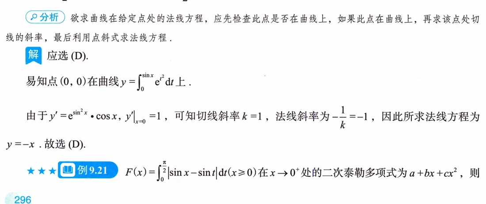
思路 曲线 \(y=\displaystyle\int_0^{\sin x}\mathrm{e}^{t^2}\mathrm{d}t\) 上对应 \(x=0\) 处的点，求该点处的法线方程（选择题）。三步：确认点在曲线上，求切线斜率（变限积分求导），取负倒数。
要点 \((0,0)\) 显然在曲线上。\(y'=\mathrm{e}^{\sin^2x}\cdot\cos x\)，\(y'\big|_{x=0}=1\)，切线斜率 \(k=1\)，法线斜率 \(-\dfrac{1}{k}=-1\)，法线方程 \(y=-x\)。
注 变限积分求导在这里就是"上限代入再乘上限导数"，没有多余动作。\(\mathrm{e}^{t^2}\) 积不出来这件事完全不影响几何应用——求导比积分容易得多，这正是变限积分题的出题逻辑。
例9.22 "积不出来"时的分部（印P297）
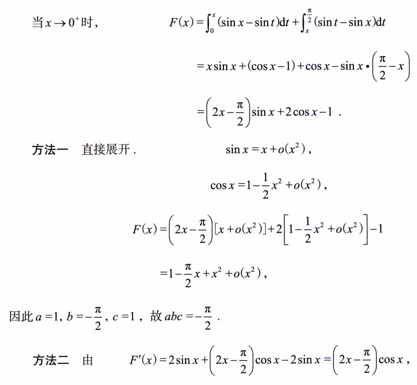
思路 设 \(f(x)=\displaystyle\int_1^{x^2}\mathrm{e}^{-t^2}\mathrm{d}t\)，计算 \(\displaystyle\int_0^1 xf(x)\,\mathrm{d}x\)。\(\mathrm{e}^{-t^2}\) 的原函数不是初等函数，"积不出来"——但题目要的不是 \(f\) 本身，先分部再求导就能绕过去。
要点
\[\int_0^1 xf(x)\,\mathrm{d}x=\frac{x^2}{2}f(x)\Big|_0^1-\int_0^1\frac{x^2}{2}f'(x)\,\mathrm{d}x.\]
由 \(f(1)=\displaystyle\int_1^1\mathrm{e}^{-t^2}\mathrm{d}t=0\)（上下限相同），\(f'(x)=\mathrm{e}^{-x^4}\cdot 2x\)（代上限 \(x^2\)、乘 \((x^2)'=2x\)），得
\[原式=-\int_0^1 x^3\mathrm{e}^{-x^4}\,\mathrm{d}x=\frac14\int_0^1\mathrm{e}^{-x^4}\,\mathrm{d}(-x^4)=\frac14\,\mathrm{e}^{-x^4}\Big|_0^1=\frac14\left(\mathrm{e}^{-1}-1\right).\]
注 "有些原函数无法用初等函数表示"是本讲重难点之一，\(\mathrm{e}^{\pm x^2}\)、\(\frac{\sin x}{x}\)、\(\frac{1}{\ln x}\) 都属于此类；处理套路固定：分部（或换序）把积分转嫁到 \(f'\) 上，而 \(f'\) 用变限求导公式永远求得出。
例9.23 变限积分的概念判断（印P297）
思路 设 \(f\) 在 \([a,b]\) 上连续，\(F(x)=\displaystyle\int_0^x f(t)\,\mathrm{d}t\)，判断 \(F\) 在定义区间上的连续性、可导性与 \(F'\) 的连续性（选择题）。这是纯概念题，考"变限积分比被积函数好一档"这条性质链。
要点 结论：\(f\) 可积 \(\Rightarrow\) \(F\) 连续；\(f\) 连续 \(\Rightarrow\) \(F\) 可导且 \(F'=f\)（从而 \(f\) 连续时 \(F'=f\) 也连续）。所以本题里 \(F\) 在 \([a,b]\) 上连续、可导，且 \(F'=f\) 连续——"变限积分天生比 \(f\) 高一阶光滑"。
注 易错点：把"\(f\) 连续"弱化成"\(f\) 可积"后，\(F\) 仍连续但未必可导（\(|x|\) 型分界）；端点处可导性按单侧理解。这类判断题与 L8 的原函数存在性辨析是一套组合拳。
例9.24 变限积分的奇偶性（印P298）
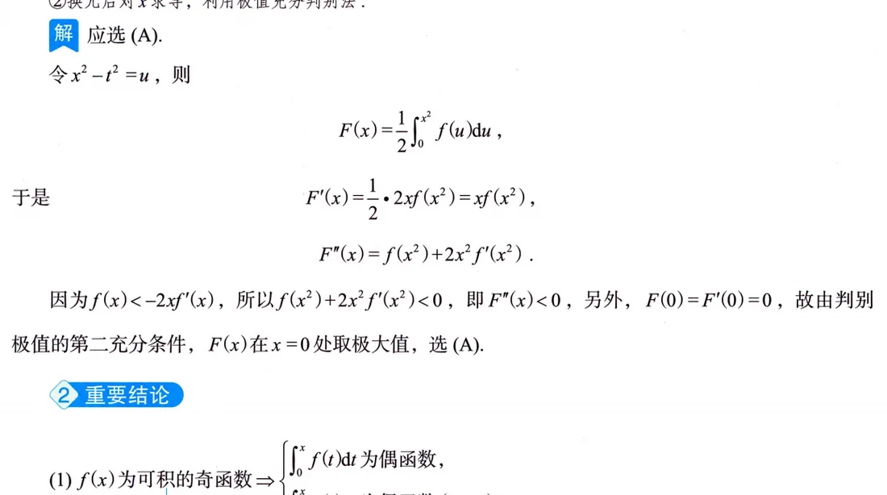
思路 设 \(F(x)=\displaystyle\int_0^x t\sin^4t\,\mathrm{d}t\)，判断其奇偶性（选择题）。不用算积分——被积函数 \(g(t)=t\sin^4t\) 是"奇 × 偶 = 奇"。
要点 \(g(-t)=(-t)\sin^4(-t)=-t\sin^4t=-g(t)\)，故 \(g\) 为奇函数；由"奇函数的变限积分（从 0 起）是偶函数"得 \(F\) 为偶函数，选 (B)。
注 想自己验证也快：\(F(-x)=\displaystyle\int_0^{-x}g(t)\mathrm{d}t\xlongequal{t=-u}-\int_0^{x}g(-u)\mathrm{d}u=\int_0^x g(u)\mathrm{d}u=F(x)\)。配套结论：偶函数的 \(\int_0^x\) 是奇函数，但它的其他原函数（加常数后）就不再是奇函数了。
例9.25 变限积分的有界性（印P299）
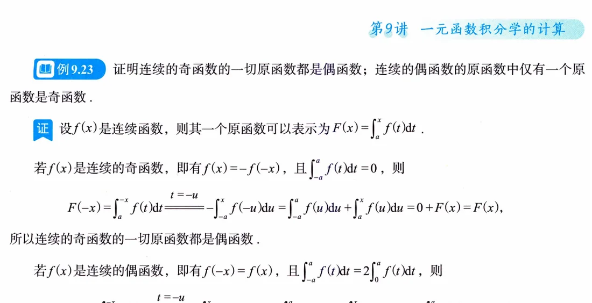
思路 设 \(F(x)=\displaystyle\int_0^x\mathrm{e}^{-t^2}\mathrm{d}t\)，问 \(F(x)\) 在 \((0,+\infty)\) 上的性态（有界/无界/单调性，选择题）。看两项：符号定单调，收敛定有界。
要点 \(\mathrm{e}^{-t^2}>0\Rightarrow F\) 单调递增；另一方面 \(0\le F(x)\le\displaystyle\int_0^{+\infty}\mathrm{e}^{-t^2}\mathrm{d}t=\frac{\sqrt{\pi}}{2}\)（概率积分收敛），故 \(F\) 单调递增且有上界，在 \((0,+\infty)\) 上有界，选 (A)。
注 单调增 + 有上界 = 有极限（\(\lim_{x\to+\infty}F=\frac{\sqrt\pi}{2}\)），这串推理把 L1 的单调有界准则、L9 的反常积分收敛性和变限积分串成一题——近年选择题喜欢这么综合。
例9.26 内部瑕点+去绝对值（印P300）
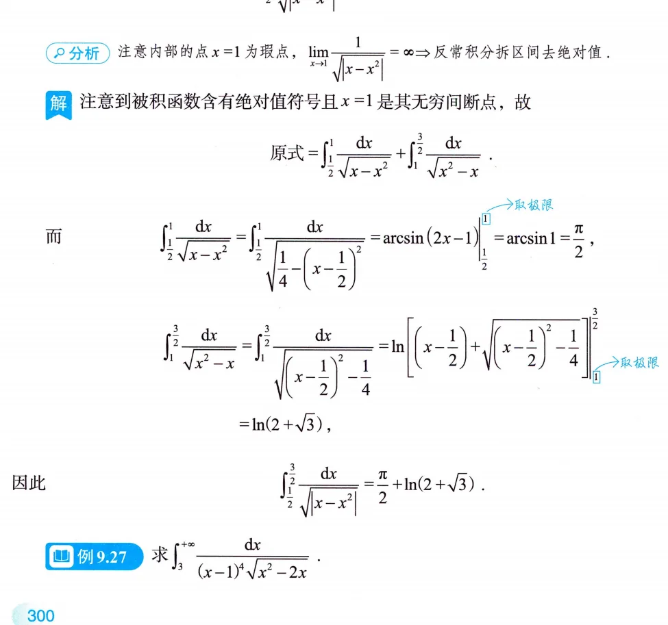
思路 计算 \(\displaystyle\int_{\frac12}^{\frac32}\frac{\mathrm{d}x}{\sqrt{|x-x^2|}}\)。被积函数带绝对值，且 \(x=1\) 是区间内部的瑕点（\(\lim_{x\to1}\frac{1}{\sqrt{|x-x^2|}}=\infty\)，因为 \(|x-x^2|\to0\)），必须拆区间去绝对值。
要点
\[\int_{\frac12}^{\frac32}\frac{\mathrm{d}x}{\sqrt{|x-x^2|}}=\int_{\frac12}^{1}\frac{\mathrm{d}x}{\sqrt{x-x^2}}+\int_{1}^{\frac32}\frac{\mathrm{d}x}{\sqrt{x^2-x}}=\frac{\pi}{2}+\ln(2+\sqrt{3}).\]
第一段配方成 \(\sqrt{\frac14-(x-\frac12)^2}\) 用 arcsin，第二段配方成 \(\sqrt{(x-\frac12)^2-\frac14}\) 用对数，\(x=1\) 处都取极限。
注 反常积分第一步永远是找奇点，端点和内部都查；漏了内部瑕点直接按定积分算就错了。两段各自收敛，加起来才收敛。
例9.27 换元实现反常积分与定积分互化（印P301）
思路 计算形如 \(\displaystyle\int_1^{+\infty}\frac{\mathrm{d}x}{x\sqrt{x^2-1}}\) 的无穷限积分。书里给的示范：令 \(x-1=\sec\theta\) 一类的三角代换，把无穷区间压成有限区间。
要点 以 \(x=\sec\theta\)（\(\theta\in[0,\frac{\pi}{2})\)）为例：\(\sqrt{x^2-1}=\tan\theta\)、\(\mathrm{d}x=\sec\theta\tan\theta\,\mathrm{d}\theta\)，\(x:1\to+\infty\) 对应 \(\theta:0\to\frac{\pi}{2}^{-}\)，于是
\[\int_1^{+\infty}\frac{\mathrm{d}x}{x\sqrt{x^2-1}}=\int_0^{\frac{\pi}{2}}\frac{\sec\theta\tan\theta}{\sec\theta\tan\theta}\,\mathrm{d}\theta=\int_0^{\frac{\pi}{2}}\mathrm{d}\theta=\frac{\pi}{2}.\]
注 "在收敛的条件下，换元可实现反常积分与定积分互化"是书里的原话——无穷端被 \(\frac{\pi}{2}\) 接住，被积函数被代换化简，两头同时受益。前提是先确认收敛（这里 \(x\to+\infty\) 时被积函数 \(\sim\frac{1}{x^2}\)，收敛）。
例9.28 分部建立递推（印P301）
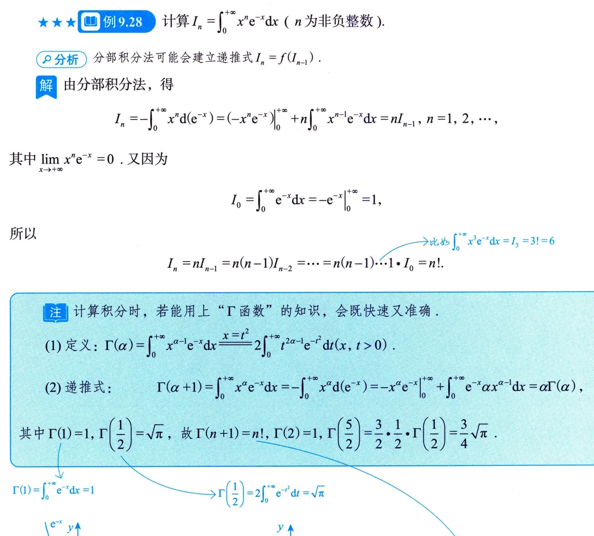
思路 \(I_n=\displaystyle\int_0^{+\infty}x^n\mathrm{e}^{-x}\mathrm{d}x\) 中 \(n\) 在变，用分部积分建立递推 \(I_n=f(I_{n-1})\)。
要点 \(I_n=-\displaystyle\int_0^{+\infty}x^n\mathrm{d}(\mathrm{e}^{-x})=(-x^n\mathrm{e}^{-x})\Big|_0^{+\infty}+n\int_0^{+\infty}x^{n-1}\mathrm{e}^{-x}\mathrm{d}x=nI_{n-1}\)（其中 \(\lim_{x\to+\infty}x^n\mathrm{e}^{-x}=0\)，指数衰减碾压幂增长）。又 \(I_0=\displaystyle\int_0^{+\infty}\mathrm{e}^{-x}\mathrm{d}x=1\)，所以 \(I_n=n!\)。比如 \(\displaystyle\int_0^{+\infty}x^3\mathrm{e}^{-x}\mathrm{d}x=3!=6\)。
注 Γ 函数版本：\(\Gamma(\alpha+1)=\alpha\Gamma(\alpha)\)，\(\Gamma(\tfrac12)=\sqrt{\pi}\)，\(\Gamma(n+1)=n!\)。例9.29 就用它秒算。
例9.29 Γ 函数实战（印P302）
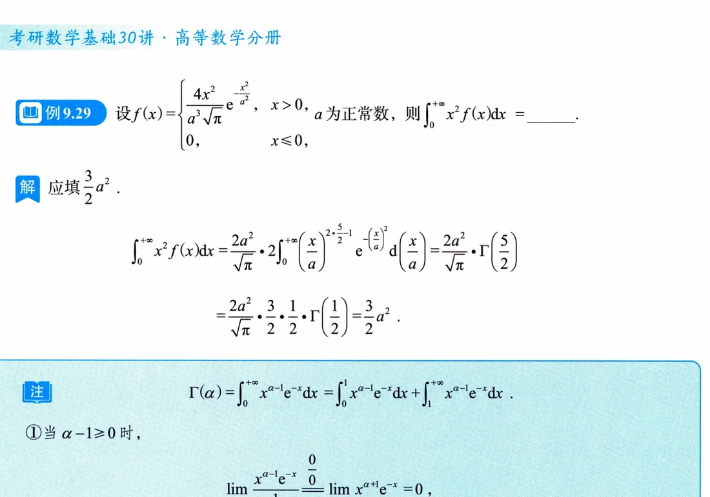
思路 已知 \(f(x)=\dfrac{4x^2}{a^3\sqrt{\pi}}\mathrm{e}^{-x^2/a^2}\)（\(x>0\)，\(a>0\)），计算 \(\displaystyle\int_0^{+\infty}x^2f(x)\,\mathrm{d}x\)。被积函数是"\(x\) 的幂 × \(\mathrm{e}^{-x^2/a^2}\)"，凑成 Γ 函数。
要点
\[\int_0^{+\infty}x^2f(x)\,\mathrm{d}x=\frac{4}{a^3\sqrt{\pi}}\int_0^{+\infty}x^4\mathrm{e}^{-x^2/a^2}\,\mathrm{d}x\xlongequal{\;u=x^2/a^2\;}\frac{4}{a^3\sqrt{\pi}}\cdot\frac{a^5}{2}\int_0^{+\infty}u^{\frac32}\mathrm{e}^{-u}\,\mathrm{d}u=\frac{2a^2}{\sqrt{\pi}}\Gamma\!\left(\tfrac52\right)=\frac{3a^2}{2}.\]
其中 \(\Gamma(\tfrac52)=\tfrac32\cdot\tfrac12\cdot\sqrt{\pi}=\tfrac{3\sqrt{\pi}}{4}\)（换元 \(u=x^2/a^2\) 时 \(x^4\,\mathrm{d}x=\dfrac{a^5}{2}u^{3/2}\,\mathrm{d}u\)）。
注 这就是概率论里正态分布各阶矩的雏形（\(a=\sqrt2\sigma\) 时恰是半边正态），数一数三都会在概率部分再遇到它——"\(x^2\) 换 \(u\)"一步把 \(\mathrm{e}^{-x^2}\) 型化成标准 Γ 是固定动作。
习题精选提示（印P302–308）
- 习题9.4 四小题正好覆盖四条主线：(1) 根式代换去 \(\sqrt{2x}\)；(2) \(\sqrt{x}\arcsin\sqrt{x}\) 型先凑 \(\frac{\mathrm{d}x}{\sqrt{x}}=2\,\mathrm{d}(\sqrt{x})\) 再分部（与本讲自测题1 同型）；(3) 多重根号 \(\sqrt{2x}\) 与 \(\sqrt[3]{2x}\) 并存时令 \(\sqrt[6]{2x}=t\)；(4) 三角有理式万能公式 \(t=\tan\frac{x}{2}\)（印P303–304）；
- 习题9.6 \(\displaystyle\int_0^1\arctan\sqrt{x}\,\mathrm{d}x\)：令 \(\sqrt{x}=t\) 化为 \(2\int_0^1t\arctan t\,\mathrm{d}t\)，分部后拆 \(t^2/(1+t^2)=1-\frac{1}{1+t^2}\)，答案 \(\frac{\pi}{4}-\frac12\)（印P305）；
- 习题9.7 \(f(x)=3x-\sqrt{1-x^2}\displaystyle\int_0^1f(x)\mathrm{d}x\)：把整个积分当未知数 \(A\)，两边积分解出 \(A=\dfrac{6}{\pi+4}\)，得 \(f(x)=3x-\dfrac{6}{\pi+4}\sqrt{1-x^2}\)（印P305）——"含 \(\int_0^1f\) 的函数方程"套路与例9.22 一脉相承；
- 习题9.8 对称性与点火套餐：\(\displaystyle\int_{-a}^{a}x^2\sqrt{a^2-x^2}\,\mathrm{d}x=\frac{\pi a^4}{16}\)（偶倍+例9.13），\(\displaystyle\int_0^\pi\sqrt{1-\sin^2x}\,\mathrm{d}x=\int_0^\pi|\cos x|\,\mathrm{d}x=2\)（去绝对值）；
- 习题9.12 \(I_n=\displaystyle\int_0^{\frac{\pi}{4}}\sin^nx\,\mathrm{d}x\) 的递推：\(nI_n=(n-1)I_{n-2}+\dfrac{1}{2^{\,n-1}}\)（分部把 \(\sin^{n-1}\) 留给微分，\(\sin^2\) 转 \(\cos^2\) 再用 \(\cos2x\) 升幂，印P308）；
- 习题9.13 判断敛散：\(\displaystyle\int_1^{+\infty}\frac{\mathrm{d}x}{x\sqrt{1+x^2}}\) 收敛（\(x\to+\infty\) 时 \(\sim\frac{1}{x^2}\)，印P308）。
易错点与技巧
- 凑微分放进 \(\mathrm{d}\) 后面的是"整体"：\(\int\sqrt{x}\,f(x^{3/2})\mathrm{d}x=\dfrac23\int f(x^{3/2})\,\mathrm{d}(x^{3/2})\)，系数 \(\frac23\) 别丢（印P279–280）。
- 分诊口诀"先看根号内有无平方项"：无平方项（\(\sqrt{\mathrm{e}^x-1}\)、\(\sqrt{ax+b}\)）整体根式代换；有平方项（\(\sqrt{a^2-x^2}\)、\(\sqrt{4x-x^2}\)）先配方再三角代换（例9.1 vs 例9.3/9.12）。
- 定积分换元"三换"：被积函数、\(\mathrm{d}x\)、上下限一起换，少一个就错；反过来，换了限就不必回代（印P291）。
- 三角代换回代时 \(\sqrt{1-\sin^2t}=|\cos t|\)：把 \(t\) 限制在主值区间（如 \([0,\frac{\pi}{2}]\)），绝对值自然去掉，处理最省事（例9.13 注，印P293）。
- 三角代换的 \(t\) 范围要跟 \(x=\varphi(t)\) 的单调区间绑定（\(\sin\) 取 \([-\frac{\pi}{2},\frac{\pi}{2}]\)、\(\tan\) 取 \((-\frac{\pi}{2},\frac{\pi}{2})\)、\(\sec\) 取 \([0,\frac{\pi}{2})\cup(\frac{\pi}{2},\pi]\)），否则 \(\sqrt{\sec^2t}=|\tan t|\) 的符号说不清（印P282）。
- 分部积分 \(u\) 选错方向会越分越繁：按"反、对、幂、指、三"，反三角/对数必须做 \(u\)（它们怕微分不怕积分），\(\mathrm{e}^x\)/三角必须做 \(v\)（印P283）。
- 反常积分先找奇点，端点和区间内部都要查；内部的瑕点（例9.26 的 \(x=1\)）最容易漏（印P300）。
- 原函数在区间内无定义时不能直接套牛顿–莱布尼茨公式，如 \(\int_0^{\frac{3\pi}{4}}\dfrac{\mathrm{d}x}{1+\cos^2x}\) 的原函数 \(\frac{1}{\sqrt2}\arctan\frac{\tan x}{\sqrt2}\) 在 \(x=\frac{\pi}{2}\) 处无定义，要分段取极限（习题9.10，印P306）。
- 被积函数里含"求导变量" \(x\) 时不能直接对变限积分求导，先换元移出去：\(f(xt)\) 令 \(xt=u\)，\(x\) 当常量（印P296 注）。
- \(\int_0^{\pi}\cos^nx\,\mathrm{d}x\) 当 \(n\) 为奇数时是 0，别和华里士公式里 \(\sin\) 的"永远加倍"混在一起；区间不是 \([0,\frac{\pi}{2}]\) 就先平移对称，别硬点火（印P292）。
- 有理函数定系数优先赋值法：代根、代 \(x=0\)，比展开比较系数快得多；赋不出来的再比较最高次项系数（例9.8–9.9，印P288–289）。
- 二次因式的部分分式拆完必是"\(\ln\)+\(\arctan\)"：分子先凑 \(k\times\)(分母)'，余下常数配 \(\arctan\)，配方后严格对照基本公式⑤（例9.10）。
- 变限积分的概念链条别记反：\(f\) 可积 \(\Rightarrow F\) 连续；\(f\) 连续 \(\Rightarrow F\) 可导且 \(F'=f\)。高一档，只有一档（例9.23）。
- "\(\mathrm{e}^{\pm x^2}\)、\(\frac{\sin x}{x}\)、\(\frac{1}{\ln x}\) 积不出来"不是不考，而是倒逼你用分部/求导绕过去（例9.22、例9.21）；见到它们第一反应是"谁在 \(\mathrm{d}\) 前后"。
考点与方法补充（站注）
以下均为站注，不是原书内容；数学事实以原书为准。
- 站注·真题大数据：本讲属于第一梯队考点（新东方近15年真题统计），几乎每年必考，且以计算量大著称——真题里换元、分部、有理拆分经常在同一道题里连环出现；华里士点火、区间再现是客观题高频工具。第一梯队板块合计约占高数分值 60%+，而积分计算是其中最"吃手上功夫"的一块。
- 站注·命题趋势：近年积分计算复杂度持续走高（多次换元的综合题），低频考点突袭回潮。对应到复习：基础阶段把每一种代换的"触发条件"练成条件反射（根号内有无平方项、分母幂次差、\(x\) 因子+对称区间），比多刷难题有用。
- 站注·反常积分敛散性：敛散性判别在真题统计中属第二梯队（15年出现10次+），常以选择题单独出现；本讲的计算训练（找奇点、拆区间、\(p\) 积分分界）正是为它服务的。
- 站注·方法论：杨超把求极限、求导、求积分称为"三大计算"，张宇的说法侧重"尽快结束纯听课阶段，自己动手最重要"、"计算能力是决定分数的第一因素"——两位老师指向同一件事：本讲的内容看会不算会，例题遮住答案亲手算一遍才算。建议每道例题先自己算，再对书里的步骤，错在哪一步就记哪一步。
- 站注·先判型后计算：张宇强化36讲第1讲的主题即"判定类型，做好计算"。落到本讲：拿到积分先过一遍检查清单——对称性？周期性？根号类型？\(x\) 因子？有理式？——判对型，方法基本就定了；判型错误是积分算崩的第一大原因。
- 站注·书系衔接：基础阶段《基础30讲》+《300题》配套使用，本讲对应 300 题的积分计算专项；强化阶段在《高数18讲》会见到同一套方法的更难组合。
- 站注·前后讲衔接：本讲是 L8（积分概念）的计算落地，也是 L10（几何应用）、L11（等式不等式证明）、L12（物理经济应用）的直接工具箱——L10 求旋转体体积时例9.13 这类"偶倍+点火"会原样重现，L11 的证明题里"分部出对称结构"是标配动作。本讲练不熟，后面三讲每道题都慢三拍。
- 站注·记号印证：本讲的"反、对、幂、指、三"五字口诀是张宇标志性记法之一（书中印P283 原文语境），后续讲泰勒展开、微分方程设特解的"一看二算三比较"是同一家族的记忆法。
知识清单自测
自测题
1. 求不定积分 \(\displaystyle\int\frac{\arcsin\sqrt{x}}{\sqrt{x}}\,\mathrm{d}x\)。
查看答案
解 先凑 \(\dfrac{\mathrm{d}x}{\sqrt{x}}=2\,\mathrm{d}(\sqrt{x})\)：原式 \(=2\displaystyle\int\arcsin\sqrt{x}\,\mathrm{d}(\sqrt{x})\)。令 \(\sqrt{x}=t\)（或直接分部，\(u=\arcsin\sqrt{x}\)、\(v=t\)）：
\[2\int\arcsin t\,\mathrm{d}t=2\left(t\arcsin t+\sqrt{1-t^{2}}\right)+C=2\sqrt{x}\arcsin\sqrt{x}+2\sqrt{1-x}+C.\]
（其中 \(\int\arcsin t\,\mathrm{d}t=t\arcsin t-\int\dfrac{t}{\sqrt{1-t^2}}\mathrm{d}t=t\arcsin t+\sqrt{1-t^{2}}\)。同型见习题9.4(2)。）
2. 用华里士公式计算 \(\displaystyle\int_0^{\frac{\pi}{2}}\cos^7x\,\mathrm{d}x\) 与 \(\displaystyle\int_0^{\pi}\sin^8x\,\mathrm{d}x\)。
查看答案
解 \(\displaystyle\int_0^{\frac{\pi}{2}}\cos^7x\,\mathrm{d}x=\frac{6}{7}\cdot\frac{4}{5}\cdot\frac{2}{3}\cdot 1=\frac{16}{35}\)。
\(\displaystyle\int_0^{\pi}\sin^8x\,\mathrm{d}x=2\int_0^{\frac{\pi}{2}}\sin^8x\,\mathrm{d}x=2\cdot\frac{7}{8}\cdot\frac{5}{6}\cdot\frac{3}{4}\cdot\frac{1}{2}\cdot\frac{\pi}{2}=\frac{35\pi}{128}\)。
3. 计算 \(\displaystyle I=\int_0^{\pi}\frac{x}{1+\cos^2x}\,\mathrm{d}x\)。
查看答案
解 区间再现去 \(x\)，令 \(x=\pi-t\)（\(\cos^2x\) 不变）：
\[I=\int_0^{\pi}\frac{\pi-t}{1+\cos^2t}\,\mathrm{d}t=\pi\int_0^{\pi}\frac{\mathrm{d}t}{1+\cos^2t}-I,\qquad I=\frac{\pi}{2}\int_0^{\pi}\frac{\mathrm{d}x}{1+\cos^2x}.\]
被积函数关于 \(x=\frac{\pi}{2}\) 对称，且 \(\dfrac{1}{1+\cos^2x}=\dfrac{\sec^2x}{2+\tan^2x}\)，凑 \(\mathrm{d}(\tan x)\)（在 \([0,\frac{\pi}{2}]\) 上取极限）：
\[\int_0^{\pi}\frac{\mathrm{d}x}{1+\cos^2x}=2\int_0^{\frac{\pi}{2}}\frac{\sec^2x\,\mathrm{d}x}{2+\tan^2x}=2\cdot\frac{1}{\sqrt2}\arctan\frac{\tan x}{\sqrt2}\Big|_0^{\frac{\pi}{2}^{-}}=\frac{\pi}{\sqrt2},\]
故 \(I=\dfrac{\pi}{2}\cdot\dfrac{\pi}{\sqrt2}=\dfrac{\sqrt2\,\pi^2}{4}\)。
（与例9.17 同型：先区间再现，再凑 \(\tan\)；注意原函数在 \(x=\frac{\pi}{2}\) 处取单侧极限——这正是习题9.10 的考点。）
4. 设 \(f(x)=\displaystyle\int_1^{x^2}\mathrm{e}^{-t^2}\,\mathrm{d}t\)，计算 \(\displaystyle\int_0^1 x f(x)\,\mathrm{d}x\)（例9.22）。
查看答案
解 \(\mathrm{e}^{-t^2}\) 积不出来，先分部再求导：
\[\int_0^1 x f(x)\,\mathrm{d}x=\frac{x^2}{2}f(x)\Big|_0^1-\int_0^1\frac{x^2}{2}f'(x)\,\mathrm{d}x.\]
由 \(f(1)=\displaystyle\int_1^1\mathrm{e}^{-t^2}\mathrm{d}t=0\)，\(f'(x)=\mathrm{e}^{-x^4}\cdot 2x\)，得
\[原式=-\int_0^1 x^3\mathrm{e}^{-x^4}\,\mathrm{d}x=\frac14\int_0^1\mathrm{e}^{-x^4}\,\mathrm{d}(-x^4)=\frac14\,\mathrm{e}^{-x^4}\Big|_0^1=\frac14\left(\mathrm{e}^{-1}-1\right).\]
5. 求不定积分 \(\displaystyle\int\frac{\mathrm{d}x}{x^3+1}\)。
查看答案
解 \(x^3+1=(x+1)(x^2-x+1)\)，设 \(\dfrac{1}{x^3+1}=\dfrac{A}{x+1}+\dfrac{Bx+C}{x^2-x+1}\)。赋值 \(x=-1\) 得 \(A=\frac13\)；令 \(x=0\) 得 \(C=\frac23\)；比较 \(x^2\) 系数得 \(B=-\frac13\)。于是
\[\int\frac{\mathrm{d}x}{x^3+1}=\frac13\ln|x+1|+\int\frac{-\frac13x+\frac23}{x^2-x+1}\mathrm{d}x=\frac13\ln|x+1|-\frac16\ln(x^2-x+1)+\frac{1}{\sqrt3}\arctan\frac{2x-1}{\sqrt3}+C,\]
其中分子拆成 \(-\frac13x+\frac23=-\frac16(2x-1)+\frac12\)，前一项给 \(\ln\)、后一项配方 \((x-\frac12)^2+\frac34\) 给 \(\arctan\)（对照例9.9–9.10 的两步套路）。
6. 计算 \(\displaystyle\int_0^{+\infty}x^4\mathrm{e}^{-x}\,\mathrm{d}x\)。
查看答案
解 记 \(I_n=\displaystyle\int_0^{+\infty}x^n\mathrm{e}^{-x}\mathrm{d}x\)，分部积分（\(\lim_{x\to+\infty}x^n\mathrm{e}^{-x}=0\)）得 \(I_n=nI_{n-1}\)，且 \(I_0=1\)，所以
\[I_4=4\cdot 3\cdot 2\cdot 1\cdot I_0=4!=24.\]
（即 \(\Gamma(5)=4!=24\)，例9.28 的递推直接套用。）